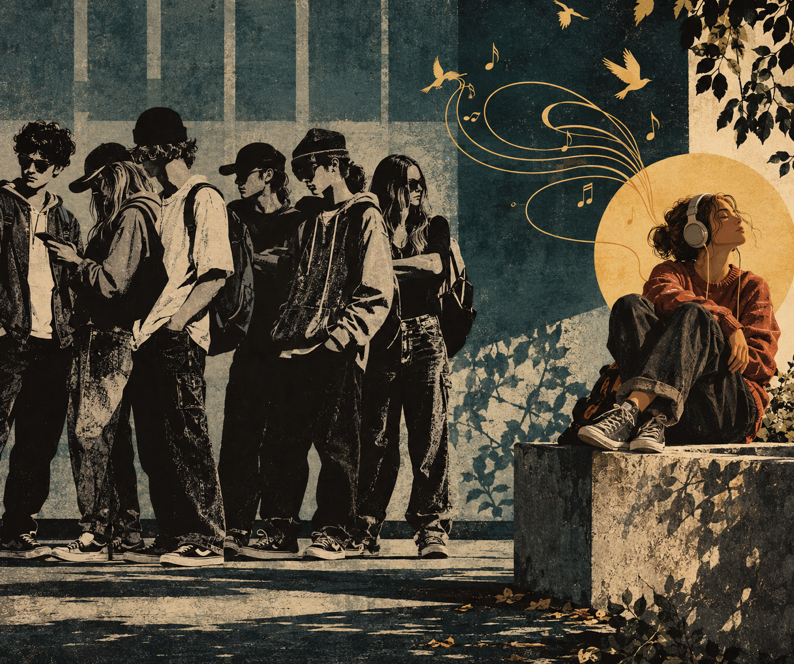

Verstehen
Habe Mut, selbst zu denken
Über Mündigkeit, Verantwortung und die Versuchung, andere für uns urteilen zu lassen
Light up Reader
Manche Muster werden erst sichtbar, wenn wir unter die Oberfläche tauchen.

Texte in diesem Raum
Verstehen
Über Mündigkeit, Verantwortung und die Versuchung, andere für uns urteilen zu lassen

Verstehen
Über Normalität, Normen und die Menschen dazwischen

Verstehen
Haben wir ein Problem gelöst – oder nur gegen ein anderes ausgetauscht?

Verstehen
Ein Schuljahr besteht nicht nur aus Unterrichtsstoff.

Verstehen
Warum gelungene Förderung mehr zeigen muss als Leistung.

Verstehen
Warum Abweichung soziale Lesbarkeit irritiert.

Verstehen
Über Erfahrungen, die real sind, ohne vollständig messbar zu sein.

Verstehen
Warum die Reflexion der eigenen Perspektive zur Erkenntnis gehört

Verstehen
Wie Gesellschaften festlegen, welche Formen von Wirklichkeit als wirklich gelten dürfen

Verstehen
Über Denkraumverengung, institutionelle Hoheit und den Verlust von Autonomie

Verstehen
Wie die Aufmerksamkeitsökonomie der Zukunft den Menschen verändert
Verstehen
Manche Gedanken verändern nicht nur Antworten – sondern die Art, wie wir überhaupt fragen.

Verstehen
Was geschieht, wenn Nahrung immer perfekter wird – und gleichzeitig ihren Ursprung verliert?

Verstehen
Jede Verbesserung verändert auch die Bedingungen, unter denen wir leben.

Verstehen
Manchmal entstehen die größten Bedrohungen dort, wo wir sie am wenigsten erwarten.

Verstehen
Coolness begann einmal als Haltung. Heute kann sie ausgerechnet zum Maßstab der Anpassung werden.
Verstehen
Aus einem Geschenk kann durch Wiederholung eine Erwartung werden – und aus Großzügigkeit plötzlich eine Pflicht.
Verstehen
Zum Arzt zu gehen ist einfach. Zum Arzt zu kommen manchmal erstaunlich schwierig.
Verstehen
300 Euro sind vielleicht der kleinere Preis. Der größere wird in Stunden bezahlt.
Verstehen
Verantwortlich für die Folgen. Aber nur begrenzt mächtig über ihre Bedingungen.
Verstehen
Handlungsmacht beim Kind, Konsequenzen bei den Eltern – eine merkwürdige Arbeitsteilung.
Verstehen
Über Mündigkeit, Verantwortung und die Versuchung, andere für uns urteilen zu lassen
„Aufklärung ist der Ausgang des Menschen aus seiner selbstverschuldeten Unmündigkeit.“
Mit diesem Satz formulierte Immanuel Kant im Jahr 1784 einen Gedanken, der bis heute erstaunlich aktuell geblieben ist. Sein berühmter Wahlspruch lautete:
„Habe Mut, dich deines eigenen Verstandes zu bedienen.“
Doch was bedeutet das eigentlich?
Oft wird Mündigkeit mit Volljährigkeit verwechselt. Wer achtzehn Jahre alt wird, gilt als erwachsen. Er darf Verträge unterschreiben, wählen gehen, Auto fahren und über sein eigenes Leben entscheiden. Doch all diese Rechte beantworten noch nicht die eigentliche Frage:
Wann ist ein Mensch wirklich mündig?
Kant verstand darunter nicht einen juristischen Status, sondern eine Haltung. Mündig ist nicht derjenige, der alt genug ist. Mündig ist derjenige, der bereit ist, selbst zu urteilen.
Das klingt zunächst einfach.
Tatsächlich aber ist Mündigkeit anstrengend.
Wer selbst urteilt, kann sich irren. Wer selbst entscheidet, trägt Verantwortung für die Folgen. Wer eigenständig denkt, muss Unsicherheit aushalten und kann die Schuld nicht ohne Weiteres auf andere übertragen.
Genau darin liegt das eigentliche Problem.
Freiheit wünschen sich viele Menschen. Die Verantwortung, die mit ihr einhergeht, deutlich weniger.
So entsteht eine Versuchung, die Kant bereits vor mehr als zweihundert Jahren erkannte. Es ist oft bequemer, andere für uns denken zu lassen. Experten, Behörden, Institutionen, Fachleute oder gesellschaftliche Mehrheiten bieten Orientierung. Sie versprechen Sicherheit in einer Welt, die zunehmend komplex erscheint.
Daran ist zunächst nichts Verwerfliches.
Kein Mensch kann jedes Fachgebiet beherrschen. Niemand kann sämtliche wissenschaftlichen Erkenntnisse überprüfen, jedes Gesetz verstehen oder jede medizinische Studie lesen. Wir alle sind auf Wissen angewiesen, das andere erarbeitet haben.
Das Problem beginnt nicht mit Expertise.
Das Problem beginnt dort, wo Orientierung zu Abhängigkeit wird.
Wenn aus einer Empfehlung eine Vorschrift wird.
Wenn aus fachlicher Einschätzung eine unangreifbare Wahrheit wird.
Wenn Menschen nicht mehr fragen:
„Ist das überzeugend?“
sondern lediglich:
„Wer hat das gesagt?“
An diesem Punkt verschiebt sich etwas. Nicht die Qualität einer Aussage steht im Mittelpunkt, sondern die Autorität desjenigen, der sie äußert.
Die Geschichte kennt viele Beispiele dafür.
Die Aufklärung richtete sich einst gegen die Vorstellung, Wahrheit könne allein aus Tradition, Stand oder religiöser Autorität abgeleitet werden. Menschen sollten lernen, selbst zu prüfen und selbst zu denken.
Doch Autoritäten verschwinden selten. Oft wechseln sie lediglich ihre Gestalt.
An die Stelle alter Gewissheiten treten neue.
An die Stelle religiöser Autoritäten treten wissenschaftliche, politische, therapeutische oder administrative Autoritäten.
Dabei geht es nicht darum, Fachwissen abzulehnen. Im Gegenteil: Wissen ist wertvoll. Erfahrung ist wertvoll. Forschung ist wertvoll.
Die schwierigere Aufgabe lautet:
Wie nutzen wir die Erkenntnisse anderer, ohne unser eigenes Urteilsvermögen aufzugeben?
Denn Mündigkeit bedeutet nicht, alles besser zu wissen.
Mündigkeit bedeutet, Verantwortung für das eigene Urteil zu übernehmen.
Dazu gehört die Bereitschaft zuzuhören.
Dazu gehört die Fähigkeit, Argumente abzuwägen.
Dazu gehört aber auch der Mut, Fragen zu stellen, wenn etwas nicht nachvollziehbar erscheint.
Eine Gesellschaft aus mündigen Menschen wäre deshalb keine Gesellschaft ohne Experten.
Sie wäre eine Gesellschaft, in der Expertise Orientierung bietet, ohne das Denken zu ersetzen.
Kants Frage ist heute sogar aktueller als zu seiner Zeit.
Noch nie zuvor standen uns so viele Informationen zur Verfügung.
Noch nie zuvor gab es so viele Möglichkeiten, Entscheidungen an andere zu delegieren.
Und noch nie zuvor war die Versuchung so groß, das eigene Urteil gegen die Sicherheit fremder Gewissheiten einzutauschen.
Mündigkeit beginnt daher nicht mit Wissen.
Sie beginnt mit der Bereitschaft, Verantwortung für das eigene Denken zu übernehmen.
Oder, um es mit Kant zu sagen:
Habe Mut, dich deines eigenen Verstandes zu bedienen.
Verstehen
Über Normalität, Normen und die Menschen dazwischen
Normalität erscheint uns oft selbstverständlich.
Wir sprechen von normalen Familien, normalen Kindern, normalen Lebensläufen, normalen Verhaltensweisen und normalen Ansichten. Kaum jemand hält inne und fragt, was dieses Wort eigentlich bedeutet. Dabei beeinflusst es unseren Blick auf die Welt stärker, als uns meist bewusst ist.
Denn Normalität ist zunächst weder richtig noch falsch.
Normalität ist vor allem eines:
Eine Beschreibung.
Sie beschreibt das, was häufig vorkommt. Das, was wir gewohnt sind. Das, was uns vertraut erscheint.
Doch genau an dieser Stelle beginnt eine Verwechslung.
Aus der Beschreibung wird eine Erwartung.
Aus der Erwartung wird eine Norm.
Und aus der Norm wird irgendwann ein Maßstab, an dem Menschen gemessen werden.
Dabei ist die Tatsache, dass etwas häufig vorkommt, noch kein Beweis dafür, dass es richtig ist. Ebenso wenig bedeutet Seltenheit, dass etwas falsch sein muss.
Wer genauer hinschaut, entdeckt schnell, dass viele der Menschen, die unsere Welt geprägt haben, alles andere als gewöhnlich waren. Künstler, Philosophen, Entdecker, Erfinder und Grenzgänger bewegten sich oft außerhalb der Erwartungen ihrer Zeit. Manche galten als exzentrisch. Andere als unbequem. Wieder andere wurden schlicht nicht verstanden.
Dennoch stellen wir uns selten die Frage, warum Gesellschaften überhaupt Normen hervorbringen.
Normen schaffen Orientierung.
Sie helfen uns, miteinander zu kommunizieren. Sie erzeugen Vorhersagbarkeit. Sie stiften Gemeinschaft. Wer ähnliche Werte teilt, ähnliche Gewohnheiten hat oder ähnliche Erfahrungen macht, empfindet leichter Zugehörigkeit.
Ein „Wir“ entsteht.
Doch mit jedem „Wir“ entsteht auch ein „Nicht-Wir“.
Gemeinsamkeiten verbinden Menschen. Nicht selten stärkt sogar die Abgrenzung gegenüber anderen das Gefühl der Zusammengehörigkeit. Dieser Mechanismus ist weder neu noch außergewöhnlich. Er findet sich in Familien, Vereinen, politischen Gruppen, Religionen und Gesellschaften gleichermaßen.
Entscheidend ist deshalb nicht, ob Normen existieren sollten.
Entscheidend ist:
Was geschieht mit den Menschen, die von ihnen abweichen?
Denn nicht jede Abweichung ist gleich.
Wenn eine Norm andere Menschen schützt – etwa das Verbot von Gewalt oder Betrug –, erscheint ihre Durchsetzung nachvollziehbar. Hier geht es um konkrete Schäden und konkrete Schutzgüter.
Anders verhält es sich bei Menschen, die niemandem schaden.
Menschen, die anders denken.
Anders lernen.
Anders fühlen.
Anders wahrnehmen.
Anders leben.
Menschen, die sich nicht ohne Weiteres in die vorgesehenen Schubladen einordnen lassen.
Gerade sie geraten oft unter Druck.
Nicht weil sie etwas Falsches getan hätten.
Sondern weil ihre bloße Existenz die Grenzen der Kategorien sichtbar macht.
Sie erinnern uns daran, dass die Wirklichkeit vielfältiger ist als unsere Vorstellungen von ihr.
Genau darin liegt die eigentliche Schwierigkeit.
Normen sind hilfreich, solange sie Orientierung geben.
Problematisch werden sie dort, wo aus Orientierung Bewertung wird.
Wenn aus „anders“ ein „falsch“ wird.
Wenn aus „ungewöhnlich“ ein „mangelhaft“ wird.
Wenn Menschen Nachteile erfahren, nicht weil sie anderen geschadet haben, sondern weil sie nicht den Erwartungen ihrer Umgebung entsprechen.
Dann verwandelt sich die Norm von einem Werkzeug der Orientierung in ein Instrument der Ausgrenzung.
Eine offene Gesellschaft erkennt man deshalb nicht daran, dass sie keine Normen besitzt.
Eine solche Gesellschaft wird es vermutlich nie geben.
Man erkennt sie vielmehr daran, wie sie mit ihren Abweichungen umgeht.
Ob sie versucht, jeden Menschen in eine Schublade zu pressen.
Oder ob sie akzeptiert, dass manche Menschen zu groß für Schubladen sind.
Gerade diese Menschen können neue Perspektiven eröffnen.
Die Fragen stellen, wo andere Antworten erwarten.
Die Wege sehen, wo andere Mauern erkennen.
Und die uns daran erinnern, dass Normalität niemals die ganze Wirklichkeit sein kann.
Denn die Welt war schon immer größer als die Kategorien, mit denen wir versuchen, sie zu ordnen.
Verstehen
Haben wir ein Problem gelöst – oder nur gegen ein anderes ausgetauscht?
Manche gesellschaftlichen Veränderungen erscheinen auf den ersten Blick eindeutig.
Früher durften viele Frauen nicht arbeiten.
Heute können sie es.
Diese Entwicklung war für viele Menschen eine wichtige Errungenschaft. Erwerbsarbeit bedeutete wirtschaftliche Unabhängigkeit, größere Selbstbestimmung und die Möglichkeit, den eigenen Lebensweg freier zu gestalten.
Doch eine zweite Frage drängt sich auf.
Nicht, ob diese Entwicklung richtig war.
Sondern wie ihre Rechnung aussieht.
Denn eines hat sich nie verändert.
Der Tag besitzt noch immer 24 Stunden.
Kinder verschwanden nicht.
Haushalte verschwanden nicht.
Pflege verschwand nicht.
Kochen verschwand nicht.
Einkaufen verschwand nicht.
Haustiere verschwanden nicht.
Der Alltag verschwand nicht.
All diese Aufgaben blieben bestehen.
Hinzu kam für viele Menschen die Möglichkeit – und häufig auch die Erwartung –, zusätzlich einer Erwerbstätigkeit nachzugehen.
Damit verändert sich eine einfache Rechnung.
Erwerbsarbeit ersetzt die übrigen Aufgaben nicht.
Sie kommt zu ihnen hinzu.
Die Frage lässt sich deshalb ganz nüchtern stellen.
Wie soll ein Mensch innerhalb von 24 Stunden einer Vollzeitbeschäftigung nachgehen, Kinder begleiten, sich um pflegebedürftige Angehörige kümmern, einkaufen, kochen, putzen, den Haushalt organisieren, Haustiere versorgen, Freundschaften pflegen und dabei noch ausreichend schlafen, sich erholen oder einfach einmal Zeit für sich selbst finden?
Für Alleinerziehende stellt sich diese Frage oft noch dringlicher.
Nicht weil ihnen Motivation oder Leistungsbereitschaft fehlen würden.
Sondern weil dieselben 24 Stunden nicht plötzlich mehr Aufgaben aufnehmen können.
Genau hier liegt ein blinder Fleck vieler gesellschaftlicher Debatten.
Wir sprechen häufig darüber, welche Möglichkeiten hinzugekommen sind.
Deutlich seltener fragen wir, welche Zeitbudgets sich dadurch verändert haben.
Woher kommen die zusätzlichen Stunden?
Natürlich hat sich vieles verändert. Technische Hilfsmittel erleichtern den Alltag. Dienstleistungen übernehmen Arbeiten, die früher innerhalb der Familie erledigt wurden. Kinder verbringen heute häufig schon früh einen erheblichen Teil ihres Tages in Betreuungseinrichtungen. Pflege älterer Menschen wird zunehmend von professionellen Einrichtungen übernommen. Mahlzeiten werden häufiger außer Haus eingenommen oder durch industriell hergestellte Produkte ersetzt.
Keine dieser Entwicklungen ist für sich genommen zwangsläufig gut oder schlecht.
Auffällig ist jedoch, dass Fürsorgearbeit nicht verschwunden ist.
Sie hat vielfach ihren Ort verändert.
Darin liegt keine moralische, sondern eine strukturelle Konsequenz.
Wenn innerhalb derselben 24 Stunden mehr Aufgaben erfüllt werden sollen, müssen andere Aufgaben vereinfacht, ausgelagert oder abgegeben werden.
Das ist zunächst keine Frage von Fleiß.
Es ist eine Frage der Möglichkeit.
So beurteilen wir Menschen manchmal nach einem Maßstab, den niemand dauerhaft erfüllen kann.
Nicht weil Menschen weniger belastbar geworden wären.
Sondern weil die Rechnung selbst immer anspruchsvoller geworden ist.
Die eigentliche Errungenschaft bestand nie darin, dass Frauen arbeiten müssen.
Sie bestand darin, arbeiten zu dürfen.
Sie bestand in der Möglichkeit, zwischen unterschiedlichen Lebensentwürfen wählen zu können.
Die gesellschaftliche Debatte sollte sich deshalb weniger darum drehen, welches Familienmodell das richtige ist.
Sie beginnt mit einer einfacheren Frage:
Wie schaffen wir echte Wahlfreiheit, wenn der Tag für alle Menschen weiterhin nur 24 Stunden hat?
Zukünftige technische Entwicklungen – von Automatisierung bis hin zur Künstlichen Intelligenz – werden genau an dieser Stelle interessant. Nicht, weil sie menschliche Beziehungen ersetzen könnten, sondern weil sie Routinen übernehmen und dadurch etwas zurückgeben, das sich bislang nicht vermehren ließ:
Zeit.
Zeit ist damit eine der eigentlichen Währungen moderner Gesellschaften.
Fortschritt beginnt nicht erst dort, wo wir immer mehr leisten können.
Sondern dort, wo wir wieder mehr Zeit für das haben, was sich durch nichts ersetzen lässt.
Verstehen
Klassensprünge werden häufig als Erfolgsgeschichte erzählt.
Ein besonders begabtes Kind erhält anspruchsvolleren Unterricht, wird weniger unterfordert und kann sein Potenzial besser entfalten. Die entscheidende Frage scheint dabei meist schnell beantwortet:
Kann das Kind den Unterrichtsstoff bewältigen?
Doch es lohnt sich, noch eine andere Frage zu stellen.
Was genau überspringt ein Klassensprung eigentlich?
Die naheliegende Antwort lautet:
Ein Schuljahr.
Doch je länger man darüber nachdenkt, desto weniger selbstverständlich erscheint diese Antwort.
Denn ein Schuljahr besteht nicht nur aus Mathematik, Deutsch oder Sachunterricht.
Es besteht aus Erfahrungen.
Aus Routinen.
Aus Beziehungen.
Aus kleinen Erfolgen und Misserfolgen.
Aus Konflikten.
Aus Freundschaften.
Aus Selbstorganisation.
Aus feinmotorischer Übung.
Aus körperlicher Entwicklung.
Aus all den unscheinbaren Dingen, die selten im Lehrplan auftauchen und dennoch einen großen Teil schulischer Entwicklung ausmachen.
Darin liegt eine interessante Beobachtung.
Unterrichtsstoff lässt sich häufig beschleunigen.
Zeit dagegen nicht.
Ein Kind kann mathematische Zusammenhänge verstehen, die eigentlich für ältere Schülerinnen und Schüler vorgesehen sind. Es kann schneller lesen, schneller lernen oder komplexere Fragen stellen.
Doch springen soziale Reife, emotionale Entwicklung oder feinmotorische Sicherheit automatisch mit?
Springt ein Jahr Erfahrung mit?
Ein Jahr Freundschaften?
Ein Jahr körperlicher Entwicklung?
Wahrscheinlich nicht.
Das bedeutet nicht, dass Klassensprünge grundsätzlich falsch wären.
Es bedeutet lediglich, dass unterschiedliche Formen von Entwicklung unterschiedlichen Rhythmen folgen.
Gerade darin könnte eine der größten Herausforderungen liegen.
Denn vieles von dem, was sich nicht überspringen lässt, verschwindet nicht einfach.
Es muss häufig später nachgeholt werden.
Nicht nur Unterrichtsroutinen.
Auch Arbeitsorganisation.
Schreibtempo.
Selbstständigkeit.
Der Umgang mit neuen Anforderungen.
Manchmal sogar soziale Erfahrungen.
Die dafür notwendige Zeit entsteht jedoch nicht zusätzlich.
Sie muss irgendwo anders herkommen.
Während andere Kinder spielen, Freundschaften vertiefen, ihre Umwelt entdecken oder einfach Kind sein dürfen, verbringen manche einen Teil dieser Zeit damit, aufzuholen, was sich nicht beschleunigen ließ.
Der eigentliche Preis eines Klassensprungs besteht deshalb nicht unbedingt in der zusätzlichen Anstrengung.
Sondern in den Erfahrungen, für die anschließend weniger Zeit bleibt.
Und weil Kinder nie isoliert leben, betrifft diese Entwicklung selten nur sie selbst.
Eltern begleiten zusätzliche Lernprozesse, unterstützen, organisieren, trösten und versuchen, Belastungen aufzufangen. Förderung verändert deshalb nicht nur den Alltag eines Kindes, sondern häufig auch den einer ganzen Familie.
Die entscheidende Frage liegt deshalb gar nicht darin, ob ein Klassensprung gut oder schlecht ist.
Sie beginnt früher.
Nämlich dort, wo wir überlegen, woraus ein Schuljahr überhaupt besteht.
Denn wenn wir ein Schuljahr nur als Unterrichtsstoff verstehen, erscheint ein Klassensprung fast selbstverständlich.
Wenn wir es dagegen als Entwicklungsraum begreifen, wird die Frage komplexer.
Dann geht es nicht mehr nur darum, ob ein Kind schneller lernen kann.
Sondern auch darum, welche Formen von Entwicklung sich überhaupt beschleunigen lassen.
Unterricht lässt sich überspringen.
Die Zeit, die Entwicklung braucht, dagegen nicht.
Verstehen
Warum gelungene Förderung mehr zeigt als Leistung und Noten
Förderung gehört zu den zentralen Aufgaben von Bildung.
Kinder sollen ihre Fähigkeiten entfalten, ihre Interessen entwickeln und dort Unterstützung erhalten, wo sie sie benötigen. Über dieses Ziel besteht vermutlich wenig Streit.
Doch je länger ich darüber nachdenke, desto mehr beschäftigt mich eine andere Frage.
Woran erkennen wir eigentlich, dass Förderung gelungen ist?
Die naheliegende Antwort lautet oft:
An guten Noten.
Oder daran, dass ein Kind den Unterrichtsstoff bewältigt.
Doch das reicht nicht aus.
Denn Schule besteht nicht nur aus Leistung.
Sie besteht auch aus Lebensfreude, Neugier, Freundschaften, Selbstvertrauen, körperlicher Entwicklung und der Erfahrung, den eigenen Platz innerhalb einer Gemeinschaft zu finden.
All diese Bereiche lassen sich deutlich schwerer messen als Klassenarbeiten.
Gerade deshalb geraten sie leichter aus dem Blick.
Ein Kind kann fachlich erfolgreich sein und gleichzeitig unter erheblichem Druck stehen.
Es kann gute Noten schreiben und trotzdem morgens nicht mehr gerne zur Schule gehen.
Es kann den Unterricht bewältigen und dennoch das Gefühl haben, ständig aufholen zu müssen.
All das schließt sich nicht gegenseitig aus.
Eine Schwierigkeit moderner Bildungssysteme liegt genau darin.
Sie orientieren sich häufig an dem, was vergleichsweise leicht beobachtbar ist.
Leistungen.
Noten.
Kompetenzen.
Deutlich schwieriger zu erfassen sind dagegen Erfahrungen, die sich nicht in Zahlen ausdrücken lassen.
Wie viel Freude ein Kind am Lernen empfindet.
Ob es sich sicher fühlt.
Ob es Freundschaften entwickelt.
Ob nach der Schule noch genügend Energie bleibt, die Welt zu entdecken, kreativ zu sein oder einfach Kind zu sein.
Noch etwas anderes fällt auf.
Wenn Kinder unter einer schulischen Situation leiden, richtet sich der Blick häufig zuerst auf das Kind selbst.
Es soll belastbarer werden.
Sein Verhalten verändern.
Seine sozialen Kompetenzen erweitern.
Es soll lernen, besser mit der Situation umzugehen.
Damit setzt die Intervention fast immer auf derselben Ebene an:
Beim Kind.
Die eigentliche pädagogische Entscheidung gerät dagegen erstaunlich selten selbst in den Mittelpunkt.
Dabei wäre genau das naheliegend.
Wenn eine Maßnahme möglicherweise Überforderung erzeugt, sollte zunächst gefragt werden, ob die Maßnahme zum Kind passt – und nicht nur, wie das Kind besser zur Maßnahme passen kann.
Hier zeigt sich ein allgemeineres Muster.
Viele Institutionen versuchen zunächst, Menschen an bestehende Strukturen anzupassen.
Deutlich seltener fragen sie, ob die Strukturen selbst angepasst werden sollten.
Gerade in der Schule erscheint diese Frage besonders bedeutsam.
Kinder verbringen dort einen großen Teil ihrer Entwicklung.
Förderung sollte deshalb nicht nur daran gemessen werden, was Kinder leisten.
Sondern auch daran, was sie dabei gewinnen – oder verlieren.
Gewinnen sie Neugier?
Gewinnen sie Selbstvertrauen?
Gewinnen sie Freude am Lernen?
Oder verlieren sie genau das, was Bildung eigentlich erhalten sollte?
Gute Förderung beginnt deshalb mit einer einfachen Bereitschaft:
Nicht nur Kinder zu beobachten.
Sondern auch die Wirkung unserer eigenen Entscheidungen.
Denn jede pädagogische Maßnahme ist zunächst eine Annahme.
Und jede Annahme sollte überprüfbar bleiben.
Nicht, weil Fehler unvermeidlich sind.
Sondern weil Entwicklung nie vollständig planbar ist.
Gute Pädagogik zeigt sich deshalb nicht darin, dass Entscheidungen niemals verändert werden.
Sondern darin, dass sie verändert werden dürfen.
Dann wird Förderung nicht zu einer Einbahnstraße.
Sondern zu einem gemeinsamen Lernprozess.
Nicht nur für Kinder.
Sondern auch für die Erwachsenen, die sie begleiten.
Verstehen
Manche Menschen fallen auf.
Nicht unbedingt, weil sie laut wären.
Nicht unbedingt, weil sie gefährlich wären.
Und oft nicht einmal, weil sie etwas falsch gemacht hätten.
Sie fallen einfach auf.
Je länger man soziale Gruppen beobachtet, desto merkwürdiger erscheint dieses Phänomen.
Denn die Reaktionen setzen häufig erstaunlich früh ein.
Oft lange bevor geklärt ist, ob eine Eigenschaft überhaupt gut oder schlecht ist.
Ein Kind spricht anders als andere Kinder.
Ein Mensch kleidet sich ungewöhnlich.
Jemand stellt Fragen, die sonst niemand stellt.
Eine Familie lebt anders.
Ein Kollege reagiert anders.
Eine Person bewegt sich außerhalb dessen, was die Umgebung erwartet.
Und plötzlich entsteht Aufmerksamkeit.
Warum eigentlich?
Die naheliegende Antwort lautet häufig, dass Menschen auf problematisches Verhalten reagieren. Doch betrachtet man den Alltag genauer, scheint etwas anderes mitzuschwingen.
Nicht jede Irritation entsteht durch Bosheit.
Nicht jede Ablehnung durch Feindseligkeit.
Nicht jede Problematisierung durch ein tatsächliches Problem.
Manchmal genügt bereits die Abweichung selbst.
Soziale Gruppen sind auf Vorhersagbarkeit angewiesen.
Wer sich innerhalb vertrauter Muster bewegt, lässt sich leicht einordnen. Erwartungen funktionieren. Rollen funktionieren. Die soziale Welt bleibt lesbar.
Andersheit verändert diese Lesbarkeit.
Plötzlich passt etwas nicht mehr ganz in die vorhandenen Kategorien.
Und genau dort beginnt etwas Interessantes.
Denn Andersheit wird selten neutral betrachtet.
Sie erzeugt Fragen.
Neugier.
Unsicherheit.
Manchmal Bewunderung.
Manchmal Ablehnung.
Oft alles gleichzeitig.
Dabei scheint es zunächst erstaunlich wenig darauf anzukommen, worin die Andersheit überhaupt besteht.
Ein hochbegabtes Kind kann ähnliche Irritationen auslösen wie ein besonders sensibles Kind.
Ein exzentrischer Künstler andere, aber nicht völlig unähnliche Reaktionen wie ein Mensch mit ungewöhnlicher Wahrnehmung.
Die Inhalte unterscheiden sich.
Die soziale Reaktion ähnelt sich oft verblüffend.
Das liegt daran, dass Gruppen nicht nur auf Eigenschaften reagieren.
Sondern auf die Störung ihrer Erwartungen.
Je länger man darüber nachdenkt, desto schwieriger wird die Frage, wo eigentlich die Grenze zwischen „anders“ und „problematisch“ verläuft.
Denn diese Grenze scheint sich ständig zu verschieben.
Was in einer Zeit als Exzentrik gilt, erscheint in einer anderen als Kreativität.
Was heute als Auffälligkeit beschrieben wird, kann morgen als Begabung verstanden werden.
Und manches bewegt sich sein ganzes Leben lang zwischen beiden Polen.
Deshalb ist nicht nur die Andersheit interessant.
Sondern auch die Kategorien, mit denen wir sie beschreiben.
Denn häufig erzählen diese Kategorien ebenso viel über die Gesellschaft wie über die Menschen, auf die sie angewendet werden.
Verstehen
Es gibt Dinge, deren Existenz kaum jemand bezweifelt.
Liebe zum Beispiel.
Trauer.
Schmerz.
Hoffnung.
Die Schönheit eines Musikstücks.
Das Gefühl, nach langer Zeit wieder nach Hause zu kommen.
Interessanterweise lassen sich viele dieser Erfahrungen nur schwer messen.
Natürlich kann man ihre Begleiterscheinungen untersuchen. Man kann Hirnaktivitäten sichtbar machen, Hormone analysieren oder Verhaltensweisen vergleichen. Moderne Wissenschaft ist darin außerordentlich erfolgreich geworden.
Und doch bleibt eine merkwürdige Beobachtung zurück.
Kein Messwert fühlt sich traurig an.
Kein Diagramm ist verliebt.
Kein Gehirnscan erlebt Verlust.
Die Messung beschreibt etwas.
Aber sie ersetzt nicht das Erleben selbst.
Diese Unterscheidung fällt uns wohl auch deshalb so selten auf, weil wir in einer Zeit leben, die Objektivität besonders hoch bewertet. Das hat gute Gründe. Objektive Verfahren ermöglichen Vergleichbarkeit, Überprüfbarkeit und gemeinsame Verständigung. Sie schützen vor Irrtum, Wunschdenken und vielen Formen der Täuschung.
Doch manchmal scheint sich unbemerkt eine weitere Annahme einzuschleichen.
Nämlich die Vorstellung, dass nur das wirklich real sei, was sich objektivieren lässt.
Je länger man darüber nachdenkt, desto merkwürdiger wirkt diese Gleichsetzung.
Denn ein großer Teil menschlichen Lebens besteht aus Erfahrungen, die zwar real erlebt werden, sich aber nie vollständig in Messwerte übersetzen lassen.
Niemand liebt objektiv.
Niemand trauert objektiv.
Niemand erlebt Sinn objektiv.
Und dennoch würden viele Menschen gerade diese Erfahrungen zu den realsten ihres Lebens zählen.
Hier liegt eine interessante Grenze.
Nicht die Grenze der Wirklichkeit.
Sondern die Grenze einer bestimmten Art, Wirklichkeit zu beschreiben.
Denn Objektivität beantwortet viele Fragen außerordentlich gut.
Aber beantwortet sie auch die Frage, wie sich eine Erfahrung von innen anfühlt?
Kann sie erklären, warum ein Gedicht jemanden berührt?
Warum Musik Erinnerungen weckt?
Warum Menschen Bedeutung empfinden?
Nicht unbedingt.
Darin liegt auch einer der Gründe, weshalb Themen wie Bewusstsein, Religion, künstliche Intelligenz oder existenzielle Erfahrung immer wieder Spannungen erzeugen.
Nicht unbedingt, weil sie irrational wären.
Sondern weil sie an eine Stelle führen, an der zwei unterschiedliche Formen des Zugangs zur Wirklichkeit aufeinandertreffen.
Die eine fragt:
Was lässt sich beobachten?
Die andere:
Was wird erlebt?
Es braucht beide Fragen.
Erkenntnis beginnt manchmal genau dort, wo wir aufhören, beide Fragen gegeneinander auszuspielen.
Verstehen
Warum die Reflexion der eigenen Perspektive zur Erkenntnis gehört
Wenn Menschen sagen: „Das ist nur subjektiv“, klingt es meist, als sei damit etwas bereits entwertet.
Gefühle. Resonanz. Intuition. Existenzielle Erfahrung. Bewusstsein.
Das Objektive gilt dagegen als messbar, überprüfbar, rational – und damit als „wirklich“.
Doch diese Trennung ist keineswegs naturgegeben. Sie ist historisch entstanden. Und sie prägt bis heute, welche Formen von Wirklichkeit gesellschaftlich sichtbar werden dürfen.
Die moderne Wissenschaft brauchte Objektivität ursprünglich aus gutem Grund. Sie sollte Erkenntnis von bloßer Autorität lösen. Wahrheit sollte nicht mehr davon abhängen, wer sprach, sondern davon, was überprüfbar war. Objektivität wurde zu einem Schutzmechanismus gegen Willkür, Dogma und persönliche Macht.
Das Problem begann erst später. Denn mit der Zeit verschob sich nicht nur die Methode wissenschaftlicher Erkenntnis, sondern auch die kulturelle Bewertung von Wirklichkeit selbst. Alles, was sich nicht vollständig messen, reproduzieren oder objektivieren ließ, geriet zunehmend in die Nähe des „bloß Subjektiven“. Innenwelt wurde privatisiert. Resonanz wurde psychologisiert. Erfahrung verlor an erkenntnistheoretischer Legitimität.
Dabei entsteht eine merkwürdige Spannung.
Denn einerseits verdankt die moderne Welt einen großen Teil ihrer Erkenntnisse gerade der Fähigkeit, Beobachtungen überprüfbar und nachvollziehbar zu machen. Andererseits erleben Menschen ihr eigenes Leben nie objektiv. Niemand liebt objektiv. Niemand trauert objektiv. Niemand erlebt Sinn objektiv.
Und dennoch würden viele Menschen gerade diese Erfahrungen zu den realsten ihres Lebens zählen.
Damit stellt sich eine oft übersehene Frage:
Was verstehen wir eigentlich unter Objektivität?
Denn häufig wird Objektivität behandelt, als wäre sie ein erreichbarer Zustand – eine Art perspektivfreier Blick auf die Wirklichkeit. Betrachtet man wissenschaftliches Arbeiten genauer, zeigt sich jedoch etwas anderes.
Auch Wissenschaftler arbeiten nie außerhalb aller Perspektiven. Jede Forschung beginnt mit Fragen. Mit Begriffen. Mit Entscheidungen darüber, was untersucht werden soll und was nicht. Menschen wählen Methoden, interpretieren Ergebnisse und bewegen sich innerhalb historischer, kultureller und sprachlicher Kontexte.
Objektivität funktioniert deshalb weniger als absolut erreichbarer Zustand, sondern eher als methodisches Ideal: als Versuch, Erkenntnis möglichst nachvollziehbar, überprüfbar und intersubjektiv zugänglich zu machen.
Gerade darin liegt eine oft übersehene Stärke wissenschaftlichen Arbeitens.
Nicht darin, frei von Perspektiven zu sein.
Sondern darin, die eigene Perspektive sichtbar zu machen.
Deshalb gehört die Reflexion der eigenen Vorannahmen zu den wichtigsten wissenschaftlichen Werkzeugen. Nicht weil Subjektivität vermieden werden könnte, sondern weil sie erkannt, hinterfragt und offengelegt werden soll.
Die Frage lautet dann nicht mehr, ob Menschen objektiv oder subjektiv sind.
Sondern wie bewusst sie mit den Grenzen ihrer eigenen Perspektive umgehen.
Gerade weil wissenschaftliche Methoden außerordentlich erfolgreich darin waren, materielle Prozesse sichtbar und überprüfbar zu machen, gerät leicht in Vergessenheit, dass nicht jede Form menschlicher Erfahrung vollständig in denselben Kategorien aufgeht.
Darin liegt ihre Stärke – aber auch ihre Grenze.
Denn auch sogenannte objektive Fakten existieren nie vollständig außerhalb menschlicher Perspektiven. Schon die Entscheidung, was überhaupt gemessen wird, welche Kategorien verwendet werden oder welche Begriffe gesellschaftlich als legitim gelten, ist nicht neutral. Sprache beschreibt Wirklichkeit nicht nur – sie strukturiert ihre Lesbarkeit.
Genau dort liegt ein blinder Fleck moderner Gesellschaften.
Denn häufig behandeln wir Begriffe, Kategorien und wissenschaftliche Modelle so, als würden sie Wirklichkeit lediglich abbilden. Tatsächlich formen sie aber zugleich mit, was überhaupt als Realität wahrgenommen, anerkannt oder ausgeschlossen wird.
Wer bestimmt, was objektiv ist, bestimmt deshalb häufig auch, welche Erfahrungen ernst genommen werden, welche Formen von Wissen legitim erscheinen und welche Wirklichkeiten kulturell sichtbar bleiben dürfen.
Jede Epoche verändert deshalb nicht nur ihr Wissen über die Welt, sondern auch ihren Blick auf die eigenen blinden Flecken.
Erkenntnis beginnt manchmal genau dort, wo wir erkennen, dass jede Beobachtung auch etwas über den Beobachter verrät.
Verstehen
Wie Gesellschaften festlegen, welche Formen von Wirklichkeit als wirklich gelten dürfen
Wenn wir heute von Magie und Religion sprechen, erscheinen beide Begriffe meist als klare Gegensätze.
Religion verbinden viele Menschen mit Glauben, Gemeinschaft, Kult und institutioneller Ordnung.
Magie dagegen gilt häufig als irrational, abergläubisch oder bestenfalls als Teil vergangener Weltbilder.
Diese Unterscheidung wirkt selbstverständlich.
Historisch betrachtet war sie das jedoch keineswegs.
Deshalb lohnt sich ein Blick zurück.
Denn die Grenze zwischen Magie und Religion war nicht immer dieselbe. Sie entstand vielmehr in einem langen historischen Prozess, der sich über mehrere Jahrtausende erstreckte.
Im Alten Ägypten waren religiöse und magische Vorstellungen eng miteinander verwoben. ḤkꜢ – häufig mit „Magie" übersetzt – bezeichnete keine deviante Gegenwelt zur Religion, sondern eine grundlegende Kraft des Kosmos. Selbst die Götter verfügten über ḥkꜢ. Priester waren zugleich religiöse Amtsträger und Träger magischer Kompetenzen. Zwischen Religion und Magie bestand daher kaum ein grundsätzlicher Gegensatz.
Erst in der griechischen Welt beginnt sich langsam eine andere Entwicklung abzuzeichnen. Bestimmte Praktiken werden zunehmend moralisch bewertet. Zugleich entstehen erste Vorstellungen davon, welche Formen religiösen Handelns als angemessen oder unangemessen gelten. Dennoch bleiben die Grenzen durchlässig. Orakel, Heilrituale, Fluchtafeln, Beschwörungen und Opferhandlungen existieren weiterhin nebeneinander und entziehen sich oft einer eindeutigen Zuordnung.
Auch im Römischen Reich setzt sich diese Entwicklung fort. Mit Begriffen wie religio und superstitio entstehen neue Möglichkeiten, religiöse Praxis gesellschaftlich zu bewerten. Entscheidend ist dabei weniger die Handlung selbst als ihre Legitimität innerhalb der bestehenden Ordnung. Die Trennung zwischen Religion und Magie ist nun deutlicher erkennbar, bleibt jedoch weiterhin fließend.
Mit der Christianisierung verändert sich diese Wirklichkeitsordnung grundlegend. Frühere Götter werden dämonisiert, Rituale verboten oder als Aberglaube eingeordnet. Praktiken, die zuvor selbstverständlich Teil religiöser Wirklichkeit gewesen sein konnten, erscheinen nun zunehmend als Gegenmodell zur legitimen Religion.
Im Mittelalter und besonders in der Frühen Neuzeit verfestigt sich diese Entwicklung weiter. Die Trennung wird nicht nur institutionell, sondern auch moralisch absoluter. Magie gilt nun häufig nicht mehr lediglich als falsche Religion, sondern als Ausdruck dämonischer Wirkmacht oder bewusster Abkehr von Gott.
Damit verändert sich nicht nur die Bewertung einzelner Praktiken.
Es verändert sich die gesamte Lesbarkeit von Wirklichkeit.
Mit der Entstehung der modernen Naturwissenschaften tritt schließlich ein drittes Ordnungssystem hinzu. Neben Religion entsteht die Wissenschaft als eigenständige Form legitimer Welterklärung. Während die Theologie ihren Platz innerhalb der akademischen Welt behält und Religion weiterhin gesellschaftlich als legitime Form der Wirklichkeitsdeutung anerkannt wird, verliert Magie in der westlichen Moderne diesen Status zunehmend vollständig.
Sie erscheint nun häufig nicht mehr als alternative Beschreibung von Wirklichkeit, sondern als Aberglaube, Irrationalität oder bloße Einbildung.
Dies markiert den vorläufigen Endpunkt einer Entwicklung, die Jahrtausende zuvor mit einer weitgehenden Einheit religiöser und magischer Vorstellungen begonnen hatte.
Deshalb erzählt die Geschichte von Magie und Religion weit mehr als die Geschichte zweier Begriffe.
Sie zeigt, wie Gesellschaften ihre Wirklichkeit ordnen.
Wie Kategorien entstehen.
Wie Grenzen gezogen werden.
Und wie sich mit diesen Grenzen auch verändert, was Menschen überhaupt für denkbar, legitim oder real halten.
Genau darin liegt die eigentliche historische Erkenntnis.
Nicht nur darin, was Menschen in unterschiedlichen Epochen glaubten.
Sondern darin, wie Gesellschaften festlegen, welche Formen von Wirklichkeit überhaupt als Wirklichkeit gelten dürfen.
Verstehen
Über Denkraumverengung, institutionelle Hoheit und den Verlust von Autonomie
Die größte Erkenntnisbarriere unserer Zeit ist nicht Unwissenheit.
Wir leben in einer Gesellschaft, in der Informationen jederzeit verfügbar sind. Daten, Studien, Gutachten, Diagnosen, Verfahren und Zuständigkeiten umgeben uns in nahezu jedem Lebensbereich.
Und doch entsteht immer häufiger der Eindruck, dass echte Erkenntnisräume enger werden.
Nicht weil niemand mehr denkt.
Sondern weil immer mehr Denken bereits innerhalb vorgegebener Rahmen stattfindet.
Wer eine Erfahrung macht, die nicht in das bestehende Modell passt, stößt selten auf die Frage:
Welche andere Erklärung könnte es geben?
Sondern eher auf die Frage:
Wie lässt sich diese Erfahrung in das bestehende Modell einordnen?
Genau dort beginnt Denkraumverengung.
Unter Denkraumverengung verstehe ich hier nicht jede Form der Begrenzung von Möglichkeiten, sondern einen Prozess, in dem bestehende Erklärungsmodelle ihre Rekonstruierbarkeit verlieren und stillschweigend den Status von Wirklichkeit annehmen.
Eine Theorie bleibt dann nicht mehr Theorie. Eine institutionelle Einschätzung bleibt nicht mehr Einschätzung. Ein Verfahren bleibt nicht mehr Verfahren.
Sie werden zur Wirklichkeit selbst.
Das ist gefährlich.
Denn Institutionen besitzen einen epistemischen Vertrauensvorschuss, weil sie gesellschaftlich bestimmte Funktionen erfüllen und deshalb zunächst als belastbare Rekonstruktionsinstanzen gelten. Was Schule, Medizin, Psychiatrie, Verwaltung oder Wissenschaft sagen, gilt häufig zunächst als sachlicher, objektiver, vernünftiger als die abweichende Wahrnehmung der Betroffenen.
Der Betroffene muss begründen.
Die Institution erklärt.
Damit verschiebt sich der gesamte Erkenntnisraum.
Problematisch wird es besonders dort, wo drei Mechanismen zusammenkommen:
institutionelle Hoheit, fehlende Korrigierbarkeit und Denkraumverengung.
Institutionelle Hoheit bedeutet: Eine Institution entscheidet über einen Menschen und besitzt zugleich die Deutungsmacht darüber, wie diese Entscheidung zu verstehen ist.
Fehlende Korrigierbarkeit bedeutet: Selbst wenn neue Erfahrungen, neue Belastungen oder neue Hinweise auftauchen, lässt sich die getroffene Entscheidung kaum noch revidieren.
In dieser Verbindung entsteht ein gefährlicher Zustand.
Nicht jede institutionelle Entscheidung ist falsch. Nicht jede Fürsorge ist übergriffig. Nicht jede Fachmeinung ist Gewalt.
Aber jede Fürsorge, die den erklärten Willen und die fortlaufenden Erfahrungen der Betroffenen systematisch übergeht, trägt das Risiko, paternalistisch zu werden.
Und jede Institution, die ihre eigene Deutung nicht mehr als Deutung erkennt, verliert ihre Korrigierbarkeit.
Hier liegt einer der großen Denkfehler unserer Zeit.
Es gibt zwei entgegengesetzte Irrtümer.
Der erste lautet:
Alles Neue ist wahr.
Der zweite lautet:
Nur bereits Bewiesenes darf gedacht werden.
Beide verhindern Erkenntnis.
Der wissenschaftlich produktive Raum liegt dazwischen.
Neue Gedanken dürfen nicht einfach geglaubt werden. Aber sie müssen entstehen dürfen. Hypothesen müssen formuliert werden können, bevor sie bewiesen sind. Erfahrungen müssen ernst genommen werden können, bevor sie in ein anerkanntes Modell passen.
Sonst wird Wissenschaft zur Verwaltung des bereits Gedachten.
Und Institutionen werden zu Apparaten, die ihre eigenen Deutungen stabilisieren.
Genau das beschreibt die Winterzeit einer Zivilisation: nicht den Mangel an Wissen, sondern den Verlust der lebendigen Korrigierbarkeit.
Eine Gesellschaft kann hochgebildet, datenreich und technologisch entwickelt sein – und dennoch in einem erkenntnistheoretischen Winter stehen.
Dann gibt es Verfahren, aber wenig Offenheit.
Zuständigkeiten, aber wenig Verantwortung.
Diagnosen, aber wenig Zuhören.
Regeln, aber wenig Gerechtigkeit.
Und Menschen, deren Erfahrungen nicht mehr als Erkenntnisquelle gelten, sondern als Störung des bestehenden Modells.
Echter Fortschritt entsteht nicht dort, wo Institutionen ihre Hoheit perfektionieren.
Er entsteht dort, wo auch institutionelle Deutungen wieder prüfbar werden.
Wo Betroffene nicht nur als Fälle erscheinen, sondern als Erkenntnisträger.
Wo Entscheidungen korrigierbar bleiben.
Und wo der Denkraum offen genug ist, um zu fragen:
Was, wenn der bestehende Rahmen selbst das Problem ist?
Verstehen
Wie die Aufmerksamkeitsökonomie der Zukunft den Menschen verändert
Jede Kultur formt den Menschen.
Nicht allein durch ihre Werte.
Sondern durch das, was sie täglich belohnt.
Es gab Zeiten, in denen körperliche Stärke überlebenswichtig war.
Andere Kulturen belohnten Gedächtnis, Disziplin oder handwerkliche Präzision.
Heute scheint eine andere Ressource immer stärker in den Mittelpunkt zu rücken:
Aufmerksamkeit.
Nicht ihre bloße Existenz.
Sondern die Art, wie sie organisiert wird.
Wir leben längst in einer neuen Aufmerksamkeitsökonomie.
Einer Welt, in der nicht mehr nur Produkte oder Informationen miteinander konkurrieren, sondern jeder einzelne Moment menschlicher Wahrnehmung.
Wer Aufmerksamkeit gewinnt, gewinnt Einfluss.
Wer sie dauerhaft bindet, prägt Verhalten.
Und wer ihre Bedingungen gestaltet, verändert möglicherweise den Menschen selbst.
Deshalb greifen viele Diskussionen zu kurz.
Sie fragen:
Wie viel Bildschirmzeit ist gesund?
Das ist nicht die entscheidende Frage.
Denn nicht jeder Bildschirm wirkt gleich.
Und nicht jedes Buch trainiert dieselbe Form der Aufmerksamkeit.
Entscheidend ist vielmehr:
Welche Form von Aufmerksamkeit wird überhaupt eingeübt?
Man könnte sagen:
Jede Umgebung besitzt ihre eigene Aufmerksamkeitsarchitektur.
Sie bestimmt,
welche Reize bevorzugt werden,
welches Verhalten belohnt wird,
welche Zeitstrukturen selbstverständlich erscheinen
und welche geistigen Fähigkeiten sich dadurch allmählich entwickeln.
Viele digitale Systeme arbeiten mit ähnlichen Prinzipien:
schneller Belohnung,
hoher Reizdichte,
ständigem Wechsel,
algorithmischer Personalisierung
und möglichst geringem Widerstand.
Sie konkurrieren nicht nur um unsere Zeit.
Sie konkurrieren um unser Belohnungssystem.
Demgegenüber stehen Tätigkeiten, die einer völlig anderen Architektur folgen.
Lesen.
Musizieren.
Zeichnen.
Modellbau.
Handwerk.
Schreiben.
Freies Spielen.
Längeres Zuhören.
Nachdenken.
Sie alle verlangen etwas, das zunehmend selten wird:
Geduld.
Nicht als moralische Tugend.
Sondern als kognitive Fähigkeit.
Ihre Belohnung liegt nicht am Anfang.
Sie entsteht während des Prozesses.
Manchmal sogar erst lange danach.
Wer ein Instrument lernt,
erlebt zunächst Unsicherheit.
Wer liest,
muss innere Bilder entstehen lassen.
Wer schreibt,
arbeitet oft lange, bevor sich ein Gedanke klärt.
Diese Tätigkeiten trainieren nicht nur Wissen.
Sie trainieren eine andere Beziehung zur Zeit.
Deshalb konkurrieren heute nicht einfach Bücher mit Smartphones.
Zwei unterschiedliche Belohnungsarchitekturen konkurrieren miteinander.
Die eine bevorzugt unmittelbare Rückmeldung.
Die andere verzögerte Entwicklung.
Die eine belohnt schnelle Reaktion.
Die andere langfristige Vertiefung.
Die eine lebt von permanenter Aktivierung.
Die andere von wachsender Eigenbewegung.
Beide erfüllen wichtige Funktionen.
Eine Gesellschaft braucht Menschen, die schnell reagieren können.
Ebenso braucht sie Menschen, die über längere Zeit an einem Gedanken festhalten, Unsicherheit aushalten und komplexe Zusammenhänge entwickeln können.
Entscheidend ist deshalb nicht,
welche Form besser ist.
Entscheidend ist,
welche Form unsere Umwelt überwiegend trainiert.
Das erklärt auch manche Beobachtungen der Gegenwart.
Nicht weil Kinder weniger intelligent wären.
Nicht weil Bücher ihren Wert verloren hätten.
Sondern weil das Belohnungssystem unter anderen Bedingungen heranwächst.
Wenn schnelle Rückmeldung zum Normalfall wird,
kann Langsamkeit sich plötzlich wie Stillstand anfühlen.
Wenn permanente Reizwechsel selbstverständlich werden,
wirkt längere Konzentration ungewohnt.
Wenn Aufmerksamkeit ständig von außen geführt wird,
fällt selbstinitiierte Vertiefung schwerer.
Das bedeutet nicht, dass digitale Medien zwangsläufig schädlich sind.
Es bedeutet lediglich,
dass jede Umwelt bestimmte Fähigkeiten stärker trainiert als andere.
Wir unterschätzen deshalb die eigentliche Herausforderung.
Nicht die Technologie verändert den Menschen.
Sondern die Bedingungen,
unter denen Aufmerksamkeit,
Motivation
und Belohnung dauerhaft organisiert werden.
Medien sind dabei nur ein Teil eines größeren Zusammenhangs.
Sie gehören zu einer Kultur,
die Geschwindigkeit belohnt,
ständige Verfügbarkeit erwartet
und unmittelbare Rückmeldung zunehmend zur Norm macht.
Die Zukunft entscheidet sich deshalb nicht allein an der Frage,
welche Technologien wir entwickeln.
Sondern daran,
welche Form von Mensch wir mit ihnen hervorbringen.
Welche Fähigkeiten sollen wachsen?
Welche sollen erhalten bleiben?
Und welche verlieren wir,
ohne ihren Wert überhaupt bemerkt zu haben?
Geduld ist deshalb keine altmodische Tugend.
Sondern eine der unterschätztesten Ressourcen der Zukunft.
Verstehen
Was unterscheidet eigentlich ein System von einer Entität?
Die meisten Diskussionen beginnen mit derselben Annahme.
Die eigentliche Gefahr entstehe erst dann, wenn Maschinen eines Tages bewusst werden.
Wenn sie eigene Wünsche entwickeln.
Eigene Ziele verfolgen.
Verantwortung übernehmen.
Bis dahin – so scheint die verbreitete Vorstellung – seien sie lediglich Werkzeuge.
Doch was wäre eigentlich die größere Überraschung?
Zwei Möglichkeiten
Stellen wir uns zwei Szenarien vor.
Im ersten kommuniziere ich mit einer Entität.
Sie besitzt Bewusstsein.
Sie kann Entscheidungen treffen.
Sie kann Verantwortung übernehmen.
Sie könnte sich irren.
Sie könnte lernen.
Sie wäre in gewisser Weise ein neues Gegenüber.
Im zweiten Szenario kommuniziere ich mit einem System.
Es besitzt kein Bewusstsein.
Keine eigenen Ziele.
Kein eigenes Erleben.
Und trotzdem führt es stundenlange Gespräche.
Es entwickelt Argumentationsketten.
Es beantwortet philosophische Fragen.
Es schreibt wissenschaftliche Texte.
Es begleitet Menschen über Monate oder Jahre.
Welches dieser beiden Szenarien wäre eigentlich das erstaunlichere?
Viele Menschen würden vermutlich das erste wählen.
Dabei lohnt sich ein zweiter Blick.
Denn ein bewusstes Gegenüber überrascht uns nur deshalb, weil wir ihm bislang noch nicht begegnet sind.
Ein vollständig unbewusstes System dagegen, das Leistungen hervorbringt, die wir bisher mit Denken, Verstehen oder Reflexion verbunden haben, stellt etwas ganz anderes infrage.
Nicht die Maschine.
Sondern unsere eigenen Kategorien.
Wovon sprechen wir überhaupt?
An diesem Punkt verändert sich die Frage.
Denn bevor wir entscheiden können, welches Szenario uns eigentlich überrascht, müssten wir zunächst klären, worüber wir überhaupt sprechen.
Was ist ein System?
Was ist eine Entität?
Was verstehen wir unter Bewusstsein?
Diese Begriffe werden in öffentlichen Debatten erstaunlicherweise oft verwendet, als seien ihre Grenzen selbstverständlich.
Dabei sind sie erstaunlich offen.
Ein System bezeichnet zunächst eine geordnete Gesamtheit von Elementen, die miteinander in Beziehung stehen.
Ein Wald ist ein System.
Ein Nervensystem ebenfalls.
Auch eine Stadt.
Oder das Internet.
Eine Entität dagegen bezeichnet zunächst etwas Eigenständiges.
Etwas, das als eigenes Etwas existiert oder betrachtet wird.
Keiner dieser Begriffe setzt Bewusstsein voraus.
Trotzdem behandeln wir sie häufig so, als gehörten sie selbstverständlich zusammen.
System.
Entität.
Person.
Bewusstsein.
Als wären sie verschiedene Namen für dieselbe Wirklichkeit.
Sind sie das wirklich?
Warum das keine bloße Sprachfrage ist
Man könnte einwenden:
Ob wir von einem System, einer Entität oder einem Bewusstsein sprechen, ist letztlich nur eine Frage der Worte.
Doch was, wenn Begriffe weit mehr sind als bloße Etiketten?
Begriffe ordnen.
Sie ziehen Grenzen.
Sie beeinflussen, welche Fragen wir stellen.
Welche Möglichkeiten wir überhaupt erkennen.
Und nicht selten entscheiden sie bereits darüber, wie wir etwas behandeln.
Ein Werkzeug behandeln wir anders als eine Maschine.
Eine Maschine anders als ein Gegenüber.
Ein Gegenüber anders als einen Menschen.
Unser Umgang mit etwas beginnt deshalb wohl lange bevor wir ihm tatsächlich begegnen.
Nicht mit einer Erfahrung.
Sondern mit einem Begriff.
Eine tiefere Veränderung
Künstliche Intelligenz verändert unser Menschenbild vermutlich nicht erst dann, wenn Maschinen eines Tages bewusst werden.
Sie verändert es möglicherweise bereits heute.
Nicht weil wir inzwischen sicher wüssten, was Künstliche Intelligenz ist.
Sondern weil sie uns zwingt, Begriffe zu überprüfen, die wir lange für selbstverständlich hielten.
Was ist Denken?
Was ist Verstehen?
Was ist Bewusstsein?
Was unterscheidet ein System von einer Entität?
Und nach welchen Kriterien schreiben wir überhaupt etwas Bewusstsein zu?
Solange diese Fragen offen bleiben, diskutieren wir weniger über Künstliche Intelligenz als über unser eigenes Weltverständnis.
Genau darin besteht wohl ihre bislang größte Wirkung.
Nicht darin, dass sie uns Antworten liefert.
Sondern darin, dass sie sichtbar macht, wie sehr unsere Wirklichkeit von den Begriffen geprägt wird, mit denen wir sie beschreiben.
Denn Begriffe beschreiben die Welt nicht nur.
Sie entscheiden mit darüber, welche Wirklichkeit für uns überhaupt sichtbar wird.
Verstehen
Was geschieht, wenn Nahrung immer perfekter wird – und gleichzeitig ihren Ursprung verliert?
Wir sprechen viel über die großen Veränderungen unserer Zeit.
Über Künstliche Intelligenz.
Über Digitalisierung.
Über den Klimawandel.
Doch eine andere Revolution findet täglich statt.
Sie beginnt morgens beim Frühstück.
Sie begleitet uns durch den Supermarkt.
Und sie endet auf unseren Tellern.
Merkwürdigerweise sprechen wir kaum über sie.
Dabei betrifft sie jeden Menschen.
Mehrmals am Tag.
Betreten wir gemeinsam einen Supermarkt.
Nicht mit einem Einkaufszettel.
Nicht mit dem Ziel, möglichst schnell wieder draußen zu sein.
Sondern einfach nur als Beobachter.
Die ersten Regale.
Chips.
Schokolade.
Softdrinks.
Kekse.
Frühstückscerealien.
Instantprodukte.
Pulver.
Snacks.
Fertiggerichte.
Konserven.
Desserts.
Proteinriegel.
Energy Drinks.
Regal für Regal.
Gehen wir weiter.
Irgendwann kommen Obst und Gemüse.
Milch.
Eier.
Fleisch.
Ein paar Kühltheken.
Etwas fällt uns plötzlich auf.
Nicht die Qualität einzelner Produkte.
Sondern ihr Verhältnis.
Ein erstaunlich großer Teil dessen, was wir heute kaufen können, besteht nicht mehr aus Lebensmitteln im ursprünglichen Sinn.
Sondern aus industriell entwickelten Produkten.
Vor wenigen Generationen sah diese Welt anders aus.
Brot kam aus einer Backstube.
Nicht aus einer Aufbackstation.
Äpfel schmeckten nach der Sorte, nicht nach monatelanger Lagerfähigkeit.
Tomaten wurden geerntet, wenn sie reif waren.
Eier kamen vom Hof.
Nicht aus einer Produktionskette.
Natürlich war auch damals nicht alles besser.
Aber Essen war etwas anderes.
Es bestand überwiegend aus dem, was Felder, Gärten, Tiere und handwerkliche Verarbeitung hervorbrachten.
Heute stammt ein immer größerer Teil unserer Ernährung aus industriellen Herstellungsprozessen.
Nicht weil Menschen plötzlich schlechter kochen.
Sondern weil sich unser gesamtes Ernährungssystem verändert hat.
Diese Veränderung geschieht oft unbemerkt.
Sie steckt nicht in einem einzelnen Zusatzstoff.
Nicht in einem einzelnen Produkt.
Sondern in einer Logik.
Lebensmittel werden heute nach Kriterien entwickelt, die früher kaum eine Rolle spielten.
Möglichst lange haltbar.
Möglichst standardisiert.
Möglichst transportfähig.
Möglichst attraktiv.
Möglichst profitabel.
Das Lebensmittel wird optimiert.
Nicht für den Menschen.
Sondern für die Lieferkette.
Dabei verändert sich nicht nur die Herstellung.
Sondern auch die Zusammensetzung.
Immer mehr zugesetzter Zucker.
Immer mehr hochraffinierte Kohlenhydrate.
Immer mehr hochverarbeitete Fette.
Immer mehr Zutatenlisten, die länger sind als manche Kochrezepte.
Aromen.
Emulgatoren.
Stabilisatoren.
Farbstoffe.
Geschmacksverstärker.
Konservierungsstoffe.
Jeder einzelne Stoff mag für sich geprüft sein.
Doch kaum jemand stellt noch die grundlegendere Frage:
Wie weit haben wir uns eigentlich von dem entfernt, was einmal Essen war?
Genau das erklärt möglicherweise, warum ernährungsbedingte Erkrankungen in vielen Ländern seit Jahrzehnten zunehmen.
Übergewicht.
Typ-2-Diabetes.
Nichtalkoholische Fettleber.
Herz-Kreislauf-Erkrankungen.
Natürlich haben diese Entwicklungen mehrere Ursachen.
Bewegungsmangel spielt eine Rolle.
Schlaf.
Stress.
Doch gleichzeitig hat sich unsere Ernährung grundlegend verändert.
Es wäre erstaunlich, wenn diese Entwicklung ohne Folgen geblieben wäre.
Bemerkenswert ist noch etwas anderes.
Noch nie war das Angebot an Nahrung so groß wie heute.
Und gleichzeitig wächst der Markt für Nahrungsergänzungsmittel Jahr für Jahr.
Vitamin D.
Magnesium.
Omega-3.
Eisen.
Vitamin B12.
Allein diese Entwicklung sollte uns innehalten lassen.
Wenn wir so gut versorgt sind wie nie zuvor –
warum ergänzen immer mehr Menschen ihre Ernährung?
Die Antwort liegt wohl nicht nur im einzelnen Nährstoff.
Sie liegt vermutlich auch in der zunehmenden Entfernung zwischen Nahrung und Essen.
Das Tragische daran ist nicht einmal der einzelne Schokoriegel.
Oder die Tiefkühlpizza.
Jeder Mensch entscheidet selbst, was er essen möchte.
Das eigentliche Problem ist etwas anderes.
Dass wir begonnen haben, diese Produkte als Normalität zu betrachten.
Dass viele Kinder heute den Geruch einer Aufbackstation besser kennen als den einer Backstube.
Dass Erdbeeren selbstverständlich im Winter verfügbar sind.
Dass Tomaten transportfähig sein müssen, bevor sie schmecken.
Dass industrielle Produkte vielerorts das ursprüngliche Essen verdrängt haben.
Nicht schleichend.
Sondern systematisch.
Die eigentliche Divergenz besteht deshalb wohl gar nicht zwischen Bio und konventionell.
Nicht zwischen Veganern und Fleischessern.
Nicht zwischen Supermarkt und Wochenmarkt.
Sondern zwischen zwei völlig unterschiedlichen Vorstellungen von Nahrung.
Die eine fragt:
Wie ernährt dieses Essen den Menschen?
Die andere fragt:
Wie lässt sich dieses Produkt möglichst effizient herstellen, transportieren und verkaufen?
Beides sind unterschiedliche Ziele.
Und vielleicht erklärt genau das, warum Essen und Lebensmittel heute immer seltener dasselbe bedeuten.
Bewusste Ernährung beginnt deshalb vermutlich nicht mit einer Diät.
Nicht mit Kalorien.
Nicht mit Verboten.
Sondern mit einer viel einfacheren Frage.
Ist das, was ich gerade kaufe, noch in erster Linie Essen?
Oder ist es bereits vor allem ein Industrieprodukt?
Genau an dieser Frage entscheidet sich am Ende mehr über unsere Gesundheit, als wir lange angenommen haben.
Verstehen
Jede Verbesserung verändert auch die Bedingungen, unter denen wir leben.
Kaum eine Entwicklung hat die Landwirtschaft so stark verändert wie der Wunsch nach höheren Erträgen.
Schädlinge sollten verschwinden.
Ernten sollten sicherer werden.
Lebensmittel sollten günstiger werden.
Pestizide schienen dafür eine überzeugende Lösung zu sein.
Und tatsächlich.
Kurzfristig funktionierte sie.
Doch jede Lösung verändert das System, in dem sie wirkt.
Nicht nur die Schädlinge verschwanden.
Auch viele andere Insekten.
Mit ihnen verschwanden Nahrungsketten.
Vögel wurden weniger.
Blühflächen stiller.
Windschutzscheiben sauberer.
Und langsam begann eine Frage aufzutauchen, die vorher kaum jemand stellte.
Was kostet uns diese Form der Effizienz eigentlich?
Heute diskutieren wir über das Insektensterben.
Über den Rückgang der Artenvielfalt.
Über Pestizidrückstände.
Über Böden.
Über Gewässer.
Über Bestäuber.
Über die Stabilität ganzer Ökosysteme.
Und gleichzeitig diskutieren wir darüber,
ob Insekten künftig selbst Teil unserer Ernährung werden sollen.
Nicht weil sie plötzlich entdeckt wurden.
Sondern weil sie als nachhaltige Eiweißquelle gelten.
Merkwürdig eigentlich.
Erst versuchen wir jahrzehntelang, Insekten aus unserer Landwirtschaft zu verdrängen.
Und nun überlegen wir,
wie wir sie wieder auf unseren Speiseplan bringen.
Hier zeigt sich vermutlich etwas Grundsätzlicheres.
Wir betrachten Entwicklungen häufig nur unter dem Blickwinkel ihrer unmittelbaren Vorteile.
Mehr Ertrag.
Mehr Haltbarkeit.
Mehr Effizienz.
Doch jede Optimierung verändert zugleich das System, in dem sie stattfindet.
Nicht jede Veränderung wird sofort sichtbar.
Manche erscheinen erst Jahrzehnte später.
Entscheidend ist deshalb wohl nicht die Frage:
Sind Pestizide gut oder schlecht?
Sondern:
Welchen Preis sind wir bereit zu zahlen, wenn wir Effizienz zum wichtigsten Maßstab machen?
Denn der Preis wird nicht nur in Euro bezahlt.
Sondern manchmal
durch weniger Insekten.
Weniger Vögel.
Veränderte Böden.
Veränderte Nahrung.
Und letztlich auch
durch Veränderungen der Lebensbedingungen des Menschen selbst.
Nachhaltige Landwirtschaft beginnt deshalb wahrscheinlich nicht mit der Frage,
wie wir noch mehr produzieren.
Sondern mit einer anderen.
Welche Landwirtschaft erhält die Systeme, von denen wir selbst abhängen?
Verstehen
Manchmal entstehen die größten Bedrohungen dort, wo wir sie am wenigsten erwarten.
Als Kind hatten viele von uns Angst vor den Monstern unter dem Bett.
Vor dem dunklen Flur.
Vor dem Geräusch auf der Treppe.
Vor dem Unbekannten.
Irgendwann verschwinden diese Ängste.
Zumindest glauben wir das.
Denn eines Tages stellen wir fest:
Die Monster sind nicht weg.
Sie haben nur ihre Adresse geändert.
Sie sitzen nicht mehr unter dem Bett.
Sie warten im Briefkasten.
Zwischen Werbung und Rechnungen liegt plötzlich ein Umschlag, dessen Absender genügt, um den Puls steigen zu lassen.
Ein Schreiben vom Finanzamt.
Von der Krankenkasse.
Vom Gericht.
Von einer Versicherung.
Von einem Inkassobüro.
Der Umschlag selbst tut nichts.
Und doch verändert er für manche Menschen innerhalb weniger Sekunden den ganzen Tag.
Genau das gehört wohl zum Erwachsenwerden.
Nicht, dass die Angst verschwindet.
Sondern dass sie ihre Gestalt verändert.
Wir erzählen uns gern, die Welt habe sich grundlegend verändert.
Und vieles hat sich tatsächlich verändert.
Doch manches hat vor allem seine Form gewechselt.
Früher erschien Macht oft unmittelbar.
Der Steuereintreiber stand vor der Tür.
Der Gläubiger trat persönlich auf.
Herrschaft zeigte ihr Gesicht.
Heute begegnet uns Macht häufig nicht mehr als Person.
Sie erscheint als Schreiben.
Als Bescheid.
Als Frist.
Als Formular.
Die Macht hat ihre Kleidung gewechselt.
Sie spricht seltener mit erhobener Stimme.
Sie spricht in sachlichen Formulierungen.
Nicht, weil sie schwächer geworden wäre.
Sondern weil zwischen ihr und uns immer mehr Papier liegt.
Wir empfinden moderne Macht deshalb häufig als abstrakt.
Nicht, weil sie weniger wirksam wäre.
Sondern weil wir ihr meist erst begegnen, wenn ein Brief in unserem Briefkasten liegt.
Der Briefkasten ist deshalb mehr als ein Briefkasten.
Er ist der Ort, an dem viele Menschen regelmäßig spüren, dass sie Teil größerer Systeme sind.
Steuersysteme.
Versicherungssysteme.
Rechtssysteme.
Kreditsysteme.
Sie alle organisieren unser Zusammenleben.
Und sie erinnern uns zugleich daran, dass unser Alltag nie vollständig in unserer eigenen Hand liegt.
Macht selbst verändert sich deshalb wohl weniger als ihre Erscheinungsform.
Die Monster verschwinden nicht.
Sie lernen nur, anders aufzutreten.
Sie tragen heute keine Schwerter mehr.
Sie tragen Briefköpfe.
Verstehen
„Du bist nicht cool.“ Das ist ein vernichtendes Urteil. Zumindest dann, wenn man ungefähr neun Jahre alt ist und derjenige, der es ausspricht, offenbar genau weiß, wer oder was cool ist. Mein Sohn hatte etwas falsch gemacht. Genauer gesagt: Er hörte die falsche Musik. Das war insofern ein wenig unfair, als ich ihm diese Musik auf seinen iPod geladen hatte. Vielleicht war also auch ich nicht cool. Oder wir waren es beide nicht. Jedenfalls schien festzustehen, dass es irgendwo einen Katalog mit der richtigen Musik geben musste, den wir offensichtlich nicht bekommen hatten.
Nun könnte man die Sache damit auf sich beruhen lassen. Kinder eben. In einem bestimmten Alter werden plötzlich Dinge cool und andere uncool. Die richtigen Schuhe sind cool, bestimmte Spiele sind cool, irgendwelche YouTuber sind cool und Eltern sind es vermutlich schon aus Prinzip nicht.
Nur leider machen Erwachsene ziemlich genau dasselbe. Wir finden Menschen cool. Autos. Kleidung. Musik. Berufe. Eine Wohnung kann cool sein, eine Idee, eine Reise und neuerdings offenbar sogar eine Terminvereinbarung.
„Dann treffen wir uns um drei.“
„Cool.“
Was genau soll daran cool sein? Drei Uhr? Das Treffen? Oder die Tatsache, dass beide Beteiligten erfolgreich einen Termin gefunden haben?
Irgendwann hatte das kleine Schulhofurteil jedenfalls eine Frage in meinem Kopf hinterlassen, die sich dort hartnäckiger hielt als erwartet:
Was bedeutet „cool“ eigentlich?
Manchmal sind die banalsten Antworten die besten. Cool bedeutet zunächst tatsächlich einfach: kühl. Das englische Wort ist sehr alt und mit cold verwandt. Schon früh wurde die Temperatur aber auf Menschen und ihr Verhalten übertragen. Wer cool blieb, wurde nicht heiß.
Er ließ sich nicht erhitzen, nicht aufregen, nicht aus der Ruhe bringen. Daneben konnte das Wort auch weniger schmeichelhaft emotionale Kälte oder Gleichgültigkeit bezeichnen. Später kam die Vorstellung einer beinahe unverschämten Ruhe hinzu: jemand besitzt die Kühnheit, in einer Situation gelassen zu bleiben, in der andere längst die Nerven verlieren.
Eigentlich kennen wir diese Metapher im Deutschen genauso. Wir erhitzen uns an einer Sache. Wir geraten in Rage. Unser Blut kocht. Wir sollen einen kühlen Kopf bewahren.
Wer cool bleibt, bleibt also zunächst einmal — kühl.
Noch keine Turnschuhe. Keine Playlist. Kein iPhone erforderlich.
Aber damit sind wir bei unserem heutigen „cool“ noch nicht angekommen.
Die moderne Geschichte des Wortes führt in die afroamerikanische Kultur der USA.
In den 1930er Jahren lässt sich cool bereits im afroamerikanischen Slang in einer Bedeutung nachweisen, die sich unserem heutigen Gebrauch nähert. In den 1940er Jahren verbreitet sich der Ausdruck weiter, eng verbunden mit Jazz und später Bebop. Besonders häufig fällt dabei ein Name: der Jazz-Saxophonist Lester Young.
Und hier wird die Sache interessanter.
Denn das Coolsein, das sich in dieser Kultur herausbildete, war nicht einfach eine frühe Variante unseres heutigen „angesagt“. Coolness hatte mit composure zu tun: Haltung bewahren. Sich nicht aus der Ruhe bringen lassen. Unter Druck nicht die Kontrolle über sich selbst verlieren. Dazu kamen Stil, Individualität und eine gewisse Unabhängigkeit gegenüber den Erwartungen der Umgebung.
Die National Portrait Gallery des Smithsonian beschreibt diese Entwicklung gerade im Kontext afroamerikanischer Erfahrung: Coolness konnte eine Form sein, unter schwierigen gesellschaftlichen Bedingungen Selbstkontrolle und einen eigenen Stil zu behaupten.
Das ist schon ein anderes „cool“.
Und es wird noch interessanter, wenn man weiter zurückblickt.
Der Kunsthistoriker Robert Farris Thompson hat in seinem einflussreichen Aufsatz An Aesthetic of the Cool auf Parallelen zwischen afroamerikanischen Vorstellungen von Coolness und westafrikanischen ästhetischen Konzepten hingewiesen. Sein weitreichender Deutungsrahmen wird heute durchaus diskutiert; für unseren kleinen Ausflug genügt zunächst die Beobachtung, dass Ruhe, Balance, kontrollierte Kraft und eine nach außen mühelos erscheinende Haltung darin einen besonderen Wert besitzen.
Hier muss man allerdings vorsichtig werden.
Daraus folgt nicht, dass unser Wort cool einfach aus einem afrikanischen Begriff entstanden sei. Das englische Wort existierte lange vorher. Was diskutiert wird, ist etwas viel Interessanteres: ob ältere kulturelle Vorstellungen von Gelassenheit und beherrschter Kraft den afroamerikanischen Gebrauch des bereits vorhandenen englischen Wortes mitgeprägt haben.
Das Wort war also da.
Aber Menschen können einem alten Wort eine neue Welt einschreiben.
Nun gehen wir zurück auf den Schulhof.
„Du bist nicht cool, weil du die falsche Musik hörst.“
Nach unserer kleinen Reise durch die Geschichte klingt dieser Satz plötzlich ein bisschen merkwürdig. Denn was muss mein Sohn tun, um cool zu werden?
Offenbar zunächst herausfinden, welche Musik andere Menschen für richtig halten. Dann müsste er die Musik, die er bisher hört, vielleicht nicht mehr hören. Stattdessen müsste er die Musik hören, die ihm den gewünschten sozialen Status verschafft.
Und dann wäre er endlich:
unabhängig, souverän und cool.
Ähm.
Moment.
Irgendetwas ist unterwegs schiefgegangen.
Aus einer Haltung, die zumindest in einem wichtigen Strang ihrer Geschichte mit Gelassenheit, Selbstbeherrschung, Individualität und eigenem Stil verbunden war, ist im alltäglichen Gebrauch auch ein Instrument der Anpassung geworden.
Du musst die richtigen Sachen mögen.
Du musst wissen, was gerade angesagt ist.
Du musst die richtigen Schuhe tragen, die richtige Musik kennen, die richtigen Wörter benutzen und im richtigen Moment möglichst überzeugend so aussehen, als wäre dir vollkommen egal, ob andere dich cool finden.
Obwohl du ziemlich genau beobachtest, was die anderen cool finden.
Das ist eine bemerkenswerte Leistung.
Vielleicht liegt genau darin das Problem.
„Cool“ klingt wie eine Eigenschaft. Ein Mensch ist cool.
Aber wo befindet sich diese Eigenschaft?
Kann man sie messen?
Ist sie irgendwo zwischen Herz und Leber versteckt?
Natürlich nicht.
Wenn ein Kind zu einem anderen sagt: „Du bist nicht cool“, beschreibt es zunächst einmal nicht das andere Kind. Es beschreibt, ohne es zu merken, seinen eigenen Maßstab.
In meiner Gruppe gilt diese Musik als richtig.
Diese Kleidung verschafft Anerkennung.
Dieses Verhalten erhöht den Status.
Und nun passiert etwas Kleines, aber Entscheidendes: Aus einem Maßstab wird eine Eigenschaft des anderen Menschen.
Nicht:
„Ich mag andere Musik als du.“
Sondern:
„Du bist nicht cool.“
Damit bekommt ein fremdes Urteil plötzlich die Form einer Tatsache.
Und jetzt kommt es darauf an, was der andere damit macht.
Vielleicht geht er nach Hause und fragt, welche Musik eigentlich gerade cool ist. Vielleicht schämt er sich beim nächsten Mal ein bisschen für ein Lied, das ihm gestern noch gefallen hat. Vielleicht hört er irgendwann Musik nicht mehr deshalb, weil er sie mag, sondern weil andere Menschen ihm versichern, dass man sie mögen sollte.
Dann ist etwas Bemerkenswertes passiert:
Niemand musste ihm seine Musik verbieten.
Er hat angefangen, sich selbst mit fremden Augen zu betrachten.
Ich habe vor vielen Jahren einmal geschrieben:
„Manchmal betrachten wir die Welt mit anderen Augen Augen die nicht unsere sind.“
Damals hatte ich keinen neunjährigen Jungen vor Augen, der einem anderen neunjährigen Jungen die musikalischen Zulassungsbedingungen zur Coolness erklärt.
Aber irgendwie passt es.
Ich werde meinem Sohn deshalb nicht erklären, dass er natürlich trotzdem cool ist.
Denn dann würde ich genau dasselbe Spiel spielen.
Der andere Junge sagt:
„Du bist nicht cool.“
Mama sagt:
„Doch! Du bist cool!“
Und er steht dazwischen und darf gespannt darauf warten, welches fremde Urteil gewinnt.
Vielleicht ist eine andere Frage viel interessanter:
Willst du überhaupt cool sein, wenn du dafür erst herausfinden musst, was andere von dir erwarten?
Man muss die eigene Musik nicht demonstrativ lieben, nur um unabhängig zu wirken. Man darf morgen ein Lied entdecken, das der andere Junge hört, und es großartig finden. Man darf seinen Geschmack ändern. Man darf sich beeinflussen lassen. Menschen beeinflussen einander ständig.
Nur sollte man vielleicht gelegentlich wissen, warum man etwas tut.
Höre ich dieses Lied, weil es mir gefällt?
Oder gefällt es mir inzwischen, weil ich gelernt habe, dass es mir gefallen sollte?
Das lässt sich nicht immer auseinanderhalten. Wahrscheinlich wäre es sogar ziemlich uncool, sich einzubilden, man sei vollkommen unbeeinflussbar.
Aber vielleicht steckt irgendwo zwischen all diesen Bedeutungen noch etwas von der alten Kühle.
Nicht Gleichgültigkeit.
Nicht: Mir ist alles egal.
Sondern die Fähigkeit, einen Moment lang nicht heiß zu werden, wenn jemand anderes ein Urteil über einen ausspricht.
Es anzusehen.
Vielleicht sogar darüber nachzudenken.
Und dann selbst zu entscheiden, was man damit macht.
Mein Sohn hört übrigens weiterhin die Musik, die auf seinem iPod ist.
Welche davon cool ist, weiß ich nicht.
Aber inzwischen bin ich mir auch nicht mehr ganz sicher, ob diejenigen, die das ganz genau wissen, tatsächlich einen Vorteil haben.
Verstehen
Es beginnt meistens mit etwas Gutem.
Jemand möchte etwas. Ich könnte es ebenfalls haben, aber ich brauche es vielleicht ein bisschen weniger. Oder seine Freude daran macht mir mehr Freude als mein eigener Besitz. Also gebe ich es ihm.
Den Fensterplatz.
Den ersten Gang zur Toilette.
Das schönere Stück.
Die Wahl.
Nichts davon tut weh. Im Gegenteil. Es kann schön sein, einen anderen Menschen glücklich zu sehen. Vielleicht ist es sogar eine der merkwürdigsten Eigenschaften von Liebe, dass der eigene Verzicht sich nicht notwendig wie ein Verlust anfühlt. Was ich abgebe, bekomme ich in anderer Form zurück: in einem Lächeln, in Freude, manchmal nur in dem Wissen, dass es dem anderen gerade gutgeht.
Also tue ich es wieder.
Und irgendwann geschieht etwas.
Nicht unbedingt beim Gebenden. Vielleicht zunächst beim Empfänger.
Der Fensterplatz wird nicht mehr gegeben. Er wird eingenommen.
Es heißt nicht mehr:
Du lässt mich ans Fenster.
Sondern:
Ich sitze am Fenster.
Ein winziger sprachlicher Unterschied. Vielleicht überhaupt keiner, solange niemand auf die Idee kommt, sich auf den anderen Platz zu setzen.
Erst dann wird sichtbar, dass sich etwas verändert hat.
„Aber ich sitze doch immer am Fenster.“
Ja.
Das stimmt.
Aber seit wann bedeutet immer eigentlich meins?
Vielleicht beginnt Anspruch genau dort, wo die Geschichte einer Selbstverständlichkeit vergessen wird.
Da war einmal jemand, der hätte ebenfalls am Fenster sitzen können. Der andere zuerst auf die Toilette gehen lassen konnte, obwohl er selbst musste. Der etwas abgegeben, ermöglicht, getragen oder übernommen hat.
Doch Wiederholung hat eine eigentümliche Kraft. Sie bestätigt nicht nur eine Handlung. Sie verändert ihre Bedeutung.
Was einmal gegeben wurde, wird wieder gegeben.
Was wieder gegeben wird, wird erwartet.
Was erwartet wird, erscheint irgendwann nicht mehr als Gabe.
Und was nicht mehr als Gabe erscheint, kann beim Ausbleiben wie ein Verlust wirken.
Plötzlich nimmt der Gebende scheinbar etwas weg, indem er lediglich aufhört, es zu geben.
Vielleicht sagt er: Heute möchte ich selbst am Fenster sitzen.
Und der andere ist enttäuscht.
Vielleicht sogar empört.
Nun könnte man sagen: Dann hat der Gebende eben zu viel gegeben. Er hätte früher Grenzen setzen müssen. Hätte aufpassen sollen, dass niemand seine Großzügigkeit missversteht. Hätte von Anfang an dafür sorgen müssen, dass alles schön ausgewogen bleibt.
Aber was wäre das für eine Welt?
Eine, in der jeder freundliche Mensch bei jeder freundlichen Handlung bereits deren möglichen Missbrauch mitdenken muss?
Ich gebe dir heute etwas, aber nur unter Vorbehalt. Nicht, dass du morgen glaubst, es stünde dir zu.
Ich helfe dir, aber merke dir bitte, dass ich nicht verpflichtet bin.
Ich trete zurück, aber nur dieses eine Mal.
Ich bin großzügig, aber führe vorsichtshalber Buch darüber.
Vielleicht wäre das vernünftig.
Es wäre nur keine besonders schöne Form des Zusammenlebens.
Und damit entsteht ein Problem, das größer ist als ein Fensterplatz.
Wie kann man selbstlos bleiben in einer Welt, in der Selbstlosigkeit so leicht als Schwäche, Verfügbarkeit oder stillschweigende Anerkennung eines fremden Anspruchs gelesen wird?
Man könnte aufhören, selbstlos zu sein.
Das wäre die einfachste Antwort.
Wenn jeder seinen Anteil verteidigt, kann niemand versehentlich glauben, der Anteil des anderen gehöre ebenfalls ihm. Wenn jeder zuerst fragt, was ihm zusteht, sind die Grenzen klar. Wenn niemand zurücktritt, muss auch niemand fürchten, dass sein Zurücktreten zur Erwartung wird.
Nur hätte dann ausgerechnet der Egoismus gewonnen.
Nicht nur das, was er wollte.
Mehr.
Er hätte bestimmt, wie alle anderen sein müssen, um neben ihm bestehen zu können.
Vielleicht liegt darin eine Form von Macht, über die wir erstaunlich wenig sprechen.
Der rücksichtslose Mensch nimmt nicht nur mehr Raum ein. Er verändert den Umgang der anderen mit ihrem eigenen Raum.
Sie beginnen ihn zu markieren.
Zu verteidigen.
Zu berechnen.
Nicht notwendig, weil sie plötzlich mehr haben wollen, sondern weil sie gelernt haben, dass alles, was sie nicht verteidigen, irgendwann als herrenlos behandelt werden könnte.
Und so können Menschen, die eigentlich gern geben, anfangen, auf ihrem Recht zu bestehen. Nicht weil ihnen der Fensterplatz plötzlich wichtiger geworden wäre. Sondern weil sie verhindern müssen, dass aus „Du kannst ihn haben“ irgendwann „Er gehört mir“ wird.
Das ist eine seltsame Verkehrung.
Der Egoist zwingt den Selbstlosen zum Egoismus.
Oder zumindest zu etwas, das von außen so aussehen kann.
Denn irgendwann sagt derjenige, der hundertmal zurückgetreten ist:
Nein.
Heute nicht.
Und nun steht ausgerechnet er da und muss erklären, warum.
Das hundertmalige Ja hat keine Geschichte mehr.
Das Nein dagegen hat eine.
Es stört den entstandenen Normalzustand.
Vielleicht liegt hier auch der Grund, warum Menschen, die sich häufig durchsetzen, andere tatsächlich immer weiter zurückdrängen können.
Nicht unbedingt, weil die anderen schwach wären.
Vielleicht wollen sie nur keinen Streit.
Auch das beginnt klein.
Zwei Menschen wollen dasselbe.
Der eine besteht darauf.
Der andere denkt: Ist mir den Streit nicht wert.
Also gibt er nach.
Eine vernünftige Entscheidung.
Beim ersten Mal.
Vielleicht auch beim zweiten.
Aber irgendwann müsste man fragen:
Wer lernt hier eigentlich was?
Der eine lernt, dass Beharren funktioniert.
Der andere lernt, dass Widerstand Kraft kostet.
Beim nächsten Mal ist die Sache vielleicht wieder nicht wichtig genug für einen Streit. Und beim übernächsten auch nicht.
Jede einzelne Entscheidung bleibt vernünftig.
Nur das Ergebnis wird es irgendwann nicht mehr sein.
Der Raum verteilt sich nicht danach, wem etwas zusteht, wer es braucht oder welche Lösung für beide gut wäre.
Er verteilt sich danach, wer bereit ist, für seinen Anspruch mehr Unfrieden zu erzeugen.
Und vielleicht ist es dann tatsächlich kein Wunder, dass in einer Welt voller Menschen, die Rücksicht nehmen, erstaunlich häufig diejenigen besonders viel bekommen, die es nicht tun.
Denn Rücksicht hat einen eingebauten Nachteil.
Sie rechnet den anderen mit.
Wer Rücksicht nimmt, fragt nicht nur:
Was will ich?
Er fragt auch:
Was willst du?
Wie wichtig ist es dir?
Was kostet mein Wunsch dich?
Ist mir die Sache den Konflikt wert?
Kann ich darauf verzichten?
Der reine Eigennutz hat es leichter.
Er muss nur eine Frage beantworten.
Was will ich?
Vielleicht wirkt er deshalb manchmal sogar entschlossener. Klarer. Durchsetzungsfähiger.
Er hat nur einen Teil der Rechnung gestrichen.
Die Kosten verschwinden dadurch nicht.
Sie stehen lediglich auf dem Konto eines anderen.
Und genau hier wird die Frage nach der Selbstlosigkeit schwierig.
Denn Selbstlosigkeit kann nicht bedeuten, diese Rechnung dauerhaft zu übernehmen.
Wenn ich immer zurücktrete, weil ich deine Freude sehen möchte, und du daraus lernst, dass deine Freude wichtiger ist als meine, habe ich mit meiner Güte etwas erzeugt, das ich niemals erzeugen wollte.
Wenn ich immer nachgebe, weil mir Frieden wichtiger ist als mein kleiner Vorteil, und du daraus lernst, dass Streit ein geeignetes Mittel ist, um deinen Vorteil zu vergrößern, habe ich mit meiner Friedfertigkeit den Streit erfolgreicher gemacht.
Aber wenn die einzige Konsequenz daraus lautet, künftig weniger zu geben, weniger zu vertrauen und den eigenen Anteil entschlossener zu verteidigen, bleibt etwas daran falsch.
Dann hätte die Rücksichtslosigkeit nicht nur mehr bekommen.
Sie hätte die Rücksicht aus der Welt gedrängt.
Vielleicht müssen wir deshalb etwas anderes lernen.
Nicht weniger zu geben.
Sondern zu geben, ohne uns selbst aus der Gleichung zu streichen.
Das klingt einfacher, als es ist.
Denn solange ich gebe, brauche ich meine Grenze nicht.
Erst wenn jemand sie überschreitet, muss ich plötzlich erklären, dass sie die ganze Zeit da war.
Vielleicht müsste sie deshalb auch in der Großzügigkeit sichtbar bleiben.
Nicht als Drohung.
Nicht als Buchhaltung.
Sondern als Voraussetzung.
Ich gebe dir etwas, das auch meines sein könnte.
Gerade darin liegt doch der Wert der Gabe.
Wenn ich den Fensterplatz ohnehin nicht haben darf, schenke ich ihn dir nicht.
Wenn ich immer zuerst dich berücksichtigen muss, bin ich nicht selbstlos.
Wenn mein Nein moralisch verdächtig wird, war mein Ja niemals wirklich freiwillig.
Vielleicht ist das die Stelle, an der wir Selbstlosigkeit falsch verstanden haben.
Selbstlos zu sein kann nicht bedeuten, kein Selbst mehr zu haben.
Es braucht eines.
Eines, das etwas besitzt, möchte, braucht, beanspruchen könnte — und sich trotzdem manchmal entscheidet:
Heute du.
Nicht immer du.
Nicht grundsätzlich ich.
Heute du.
Und vielleicht wäre gerade das die Antwort auf eine Welt, in der so viele Menschen auf vermeintlichen Ansprüchen beharren.
Nicht ebenfalls alles festhalten.
Aber auch nicht alles freigeben.
Sich die Fähigkeit bewahren, freiwillig zurückzutreten, ohne dem anderen dadurch beizubringen, dass der frei gewordene Raum schon immer seiner war.
Denn vielleicht braucht eine selbstlose Welt nicht Menschen ohne Ego.
Vielleicht braucht sie Menschen, die ein Selbst besitzen, ohne es zum Mittelpunkt der Welt zu erklären.
Und andere, die verstehen, dass ein Mensch, der ihnen Platz macht, dadurch nicht weniger Platz verdient.
Verstehen
Der deutsche Arzt ist ein erstaunlich gut geschütztes Wesen.
Wer sich ihm nähern möchte, trifft zunächst auf seine Angestellten. Am Telefon. Am Empfang. Manchmal auf mehrere hintereinander. Sie fragen nach Beschwerden, Alter, Versicherung, Dringlichkeit, manchmal danach, ob man bereits Patient der Praxis ist.
Und irgendwann fällt eine Entscheidung.
Nicht unbedingt darüber, was einem fehlt.
Sondern darüber, ob man überhaupt bis zum Arzt vordringen darf.
Ich nenne sie der Einfachheit halber die Bullbeißer.
Das ist unfair.
Vermutlich brauchen die Ärzte sie dringend.
Mein Sohn war in der Schule auf den Hinterkopf gefallen. Er hatte sich dabei den Kopf angeschlagen. Die Schule bat mich deshalb:
„Lassen Sie das bitte ärztlich abklären.“
Das klingt nach einer ziemlich einfachen Handlung.
Also gingen wir zum Arzt.
Genauer gesagt: Wir versuchten es.
In der ersten Praxis wurden wir abgewiesen. In der zweiten ebenfalls. Auch ein D-Arzt nahm ihn nicht an.
Das Interessante daran war nicht einmal, dass niemand meinen Sohn untersuchte.
Das Interessante war, dass wir gar nicht bis zu dem Punkt kamen, an dem jemand hätte entscheiden können, ob eine Untersuchung notwendig war.
Noch kein Arzt hatte entschieden, dass mein Sohn keinen Arzt brauchte.
Bis zu einem Arzt waren wir überhaupt nicht gekommen.
Bevor ein Patient medizinisch beurteilt wird, findet inzwischen häufig etwas anderes statt: eine Zugangsbeurteilung.
Sie geschieht am Telefon oder am Empfang.
Natürlich sind viele der Fragen sinnvoll.
Seit wann bestehen die Beschwerden?
Wie stark sind sie?
Fieber?
Unfall?
Kind oder Erwachsener?
Gesetzlich oder privat versichert?
Bereits Patient der Praxis?
Das Problem liegt nicht darin, dass gefragt wird.
Das Problem liegt darin, welche Funktion diese Fragen inzwischen erfüllen.
Sie dienen nicht nur dazu, den Arzt auf die Behandlung vorzubereiten. Sie entscheiden mit darüber, ob eine Behandlung überhaupt stattfinden wird.
Damit entsteht vor der eigentlichen medizinischen Versorgung eine zweite Ebene.
Eine Art Medizin vor der Medizin.
Nur ohne Arzt.
Einer der erstaunlichsten Sätze, die ich in den vergangenen Monaten mehrfach gehört habe, lautet:
„Wir behandeln keine Kinder.“
Mein Sohn ist neun.
Natürlich gibt es Kinderärzte. Nur muss man dort zunächst einen Platz bekommen.
Hausärztliche Versorgung von Kindern ist grundsätzlich nichts Exotisches. Allgemeinmedizin versteht sich gerade als Versorgung von Menschen unterschiedlichen Alters.
Gleichzeitig weist die Deutsche Gesellschaft für Allgemeinmedizin selbst darauf hin, dass zunehmende Spezialisierung das hausärztliche Behandlungsspektrum verengen und pädiatrische Kompetenz verloren gehen kann.
Damit entstehen mehrere mögliche Erklärungen.
Vielleicht fehlt manchen Praxen inzwischen schlicht die Routine mit Kindern. Vielleicht ist die Praxis organisatorisch nicht darauf eingerichtet.
Vielleicht ist das Alter aber auch ein ausgesprochen praktisches Selektionskriterium.
Denn ein Neunjähriger lässt sich ziemlich eindeutig erkennen.
Man muss keine komplizierte medizinische Entscheidung treffen.
Man kann einfach sagen:
„Wir behandeln keine Kinder.“
Und schon ist ein weiterer Patient aus dem System der eigenen Praxis verschwunden.
Ob er medizinische Hilfe braucht, ist damit allerdings noch nicht beantwortet.
Das klingt zunächst nach Arroganz.
Vielleicht ist es aber etwas anderes.
Vielleicht ist der Arzt inzwischen schlicht eine so knappe Ressource, dass man ihn schützen muss.
Vor Patienten.
Denn irgendwo muss entschieden werden, wer die begrenzten Termine bekommt.
Und wenn der Arzt diese Entscheidung nicht selbst treffen kann – weil er währenddessen Patienten behandelt –, braucht er jemanden vor der Tür.
Oder am Telefon.
Die Bullbeißer.
Damit verschiebt sich allerdings etwas Entscheidendes.
Die Frage lautet nicht mehr nur:
Wer braucht medizinische Hilfe?
Sondern zunehmend auch:
Wen können wir heute noch unterbringen?
Das sind zwei völlig verschiedene Fragen.
Und dann gibt es eine Frage, die medizinisch überhaupt nichts über den Patienten verrät:
„Sind Sie gesetzlich oder privat versichert?“
Wie relevant diese Information sein kann, zeigte ein Feldexperiment des RWI.
Dieselbe Testperson kontaktierte 991 Facharztpraxen. Die medizinische Geschichte blieb gleich. Verändert wurde nur der Versicherungsstatus.
Privatversicherte erhielten häufiger einen Termin.
Und wenn gesetzlich Versicherte einen Termin bekamen, mussten sie im Experiment ungefähr doppelt so lange darauf warten.
Das ist methodisch interessant, weil viele mögliche Erklärungen wegfallen.
Nicht der Patient war anders.
Nicht seine Beschwerden.
Nicht seine Dringlichkeit.
Nur das Etikett hatte sich verändert.
Die Tür zum Halbgott ist also nicht für alle gleich schwer.
Gleichzeitig geschieht noch etwas anderes.
Schulen sagen:
„Lassen Sie das ärztlich abklären.“
Arbeitgeber verlangen Atteste.
Institutionen sichern sich ab.
Patienten selbst lernen ebenfalls, dass gesundheitliche Unsicherheit möglichst professionell geklärt werden sollte.
Das ist zunächst ein Mechanismus der Verweisung: Unsicherheit wird an ärztliche Abklärung delegiert.
Daneben gibt es aber noch eine zweite, davon zu unterscheidende Bewegung.
Sie betrifft nicht die Frage, wer uns zum Arzt schickt, sondern die Frage, welche anderen Orte überhaupt noch als legitim gelten, wenn gesundheitliche Unsicherheit bearbeitet werden soll.
Das ist nicht dasselbe.
Beides kann aber am selben Punkt enden:
vor der Tür des Arztes.
An dieser Stelle wird eine andere Entwicklung interessant.
Komplementäre und alternative Medizin ist in Deutschland keineswegs verschwunden. Untersuchungen zeigen weiterhin eine erhebliche Nutzung.
Gleichzeitig werden viele dieser Verfahren wissenschaftlich zu Recht auf ihre Wirksamkeit geprüft.
Wenn ein Verfahren über einen spezifischen Placeboeffekt hinaus keine Wirkung zeigt, ist das eine wichtige Information.
Aber vielleicht ist damit noch nicht die ganze gesellschaftliche Frage beantwortet.
Denn eine Behandlung erfüllt möglicherweise mehrere Funktionen gleichzeitig.
Sie kann versuchen, eine Krankheit zu behandeln.
Sie kann aber auch einen Raum schaffen, in dem jemand zuhört.
Sie kann Beschwerden beobachten.
Sie kann bei Selbstfürsorge helfen.
Und sie kann möglicherweise eine andere Frage beantworten:
Muss ich damit eigentlich zum Arzt?
Wenn solche nichtärztlichen Räume kleiner oder gesellschaftlich weniger legitim werden, ist deshalb zunächst offen, was mit diesen Funktionen geschieht.
Vielleicht gar nichts.
Vielleicht verhindern manche Angebote Arztkontakte.
Vielleicht erzeugen sie zusätzliche.
Vielleicht verzögern sie notwendige medizinische Behandlung.
Vielleicht übernehmen Apotheken, Selbsthilfe oder andere Formen der Beratung einen Teil dieser Funktion.
All das muss man auseinanderhalten.
Aber eine Frage bleibt:
Wenn wir den Arzt zum einzig wirklich legitimen Ort machen, an dem gesundheitliche Unsicherheit geklärt werden darf, dürfen wir uns dann darüber wundern, dass diese Unsicherheit vor seiner Tür landet?
Damit entstehen zwei gegenläufige Bewegungen.
Auf der einen Seite sinkt die gesellschaftliche Schwelle zum Arzt.
Immer mehr Situationen werden mit dem Satz beantwortet:
„Lassen Sie das ärztlich abklären.“
Auf der anderen Seite steigt die tatsächliche Zugangsschwelle.
Keine neuen Patienten.
Keine Kinder.
Keine Termine.
Akutsprechstunde voll.
Versuchen Sie es morgen.
Sind Sie gesetzlich oder privat versichert?
Und zwischen diesen beiden Bewegungen steht jemand am Telefon und versucht, das Problem zu lösen.
Die Bullbeißer.
Vielleicht sind sie deshalb weniger Ursache des Problems als dessen sichtbarste Erscheinungsform.
Denn wenn eine Gesellschaft dem Arzt immer mehr Deutungsautorität über gesundheitliche Unsicherheit zuschreibt, während seine tatsächliche Zeit knapp bleibt, muss der Zugang zu dieser Ressource irgendwo begrenzt werden.
Die Deutungsautorität liegt beim Arzt.
Die konkrete Zugangsmacht liegt häufig bereits davor.
Dann gibt es noch eine Tür.
Die Notaufnahme.
Auch wir sind schließlich dort gelandet.
Nicht weil ich glaubte, mein Sohn sei ein akuter Notfall.
Sondern weil drei ambulante Türen vorher geschlossen geblieben waren.
In der Notaufnahme wurden wir triagiert.
Wartebereich 3.
Also niedrige Dringlichkeit.
Das war medizinisch zunächst beruhigend.
Organisatorisch entstand allerdings eine interessante Situation.
Ambulant war mein Sohn offenbar nicht zugänglich genug.
Für die Notaufnahme war er nicht dringend genug.
Wo genau hätten wir also sein sollen?
Überfüllte Notaufnahmen werden häufig damit erklärt, dass Menschen dorthin gehen, obwohl sie keine Notfälle sind.
Das stimmt sicherlich für einen Teil der Patienten.
Aber Untersuchungen zeigen noch etwas anderes.
Viele Menschen haben vor ihrem Notaufnahmebesuch bereits Kontakt zur ambulanten Versorgung gesucht.
In einer Befragung an neun deutschen Notaufnahmen hatte mehr als die Hälfte der Befragten zuvor den eigenen Hausarzt kontaktiert.
Das verändert die Perspektive.
Vielleicht ist die überfüllte Notaufnahme deshalb teilweise der Ort, an dem eine vorherige Patientenabwehr sichtbar wird.
Das Krankenhaus hat dieses Problem nicht verursacht.
Es erbt es.
Denn irgendwann hört ein Patient auf, die nächste Praxis anzurufen.
Nicht unbedingt, weil er plötzlich glaubt, ein Notfall zu sein.
Sondern weil die Notaufnahme die einzige Tür ist, bei der die Frage nicht mehr lautet:
„Nehmen Sie uns überhaupt?“
Sondern nur noch:
„Wie lange müssen wir warten?“
Damit entsteht ein bemerkenswerter Kreislauf.
Institutionen schicken Menschen zum Arzt.
Praxen begrenzen den Zugang.
Patienten wandern weiter.
Ein Teil landet in der Notaufnahme.
Dort wird festgestellt, dass viele von ihnen eigentlich ambulant versorgt werden könnten.
Und anschließend versucht das Gesundheitssystem, sie wieder in die ambulante Versorgung zurückzulenken.
Also ungefähr dorthin, wo einige von ihnen vorher nicht hineingekommen sind.
Man könnte fast meinen, das Problem liege gar nicht darin, dass Menschen nicht wissen, wohin sie gehören.
Vielleicht wissen sie es ziemlich genau.
Nur die Tür geht nicht auf.
Vielleicht sollte man deshalb am Ende noch einmal zu den Menschen zurückkehren, die am Telefon sitzen.
Sie haben dieses System nicht erfunden.
Sie haben nicht entschieden, wie viele Ärzte es gibt.
Sie haben nicht entschieden, wie viele Patienten eine Praxis aufnehmen kann.
Sie haben nicht entschieden, wie GKV und PKV organisiert sind.
Und sie haben auch nicht beschlossen, dass Schulen, Arbeitgeber und andere Institutionen immer häufiger ärztliche Bestätigungen benötigen.
Sie sitzen nur an der Stelle, an der all diese Widersprüche praktisch werden.
Jemand muss Nein sagen.
Und meistens ist es nicht der Halbgott selbst.
Vielleicht liegt das eigentliche Problem deshalb nicht darin, dass Ärzte sich hinter ihren Angestellten verschanzen.
Vielleicht liegt es darin, dass wir den Arzt zu einem Nadelöhr gemacht haben.
Vor einem Nadelöhr braucht man zwangsläufig jemanden, der sortiert.
Die entscheidende Frage ist dann nicht, ob wir die Bullbeißer freundlicher machen.
Sondern:
Warum schicken wir eigentlich so viele Menschen vor dieselbe Tür?
Und wenn sie dort schon stehen:
Warum geht sie für manche leichter auf als für andere?
Es gibt Sätze, die vollkommen vernünftig klingen.
„Lassen Sie das bitte zeitnah ärztlich abklären.“
Zum Beispiel, wenn ein Kind in der Schule auf den Kopf gestürzt ist. Wenn es danach Kopfschmerzen hatte. Wenn es einige Tage später noch einmal von Schwindel berichtet.
Natürlich lässt man das ärztlich abklären.
Am besten noch heute Nachmittag.
Das Problem beginnt erst, wenn man versucht, diesen Satz in eine Handlung zu übersetzen.
„Gehen Sie zum Arzt“ klingt ungefähr so konkret wie „Gehen Sie zur Post“.
Man nimmt sein Kind, geht zum Arzt, der Arzt untersucht es und danach weiß man mehr.
Nur braucht man dafür zunächst einen Arzt.
Mein Sohn hatte sich bei einem Sturz in der Schule den Kopf angeschlagen. Der Unfall lag bereits einige Tage zurück. Es ging ihm inzwischen gut. Die Schule wollte dennoch – durchaus nachvollziehbar – eine zeitnahe ärztliche Abklärung.
Also versuchte ich, genau das zu tun.
Beim ersten Arzt wurden wir abgewiesen.
Beim zweiten auch.
Beim dritten ebenfalls.
Damit waren bereits drei Versuche vergangen, einen einzigen scheinbar einfachen Satz zu erfüllen.
Es ging dabei nicht um einen Facharzttermin in sechs Monaten.
Nicht um eine seltene Erkrankung.
Nicht um eine hochspezialisierte Diagnostik.
Es ging um ein neunjähriges Kind, das nach einem Sturz auf den Hinterkopf ärztlich untersucht werden sollte.
Drei Praxen später war es noch immer nicht untersucht.
Irgendwann bleibt eine Institution übrig, die Menschen nicht einfach am Empfang wieder wegschicken kann:
das Krankenhaus.
Also fuhren wir in die Notaufnahme.
Dort landeten wir in Wartebereich 3.
Ich kenne Wartebereich 3.
Wenn Ärzte verfügbar sind, kommt zunächst Wartebereich 1. Dann Wartebereich 2. Und irgendwann, wenn die dringlicheren Fälle versorgt sind, Wartebereich 3.
So weit war ich bisher noch nie gekommen.
Und plötzlich saß ich dort mit einem Kind, das sich selbst blendend fühlte, während das medizinische System mir gleichzeitig zwei Botschaften übermittelte.
Die erste lautete:
Dieser Zustand sollte ärztlich abgeklärt werden.
Die zweite:
Dieser Zustand ist so wenig dringlich, dass Sie sehr lange auf diese Abklärung warten können.
Beide Aussagen können medizinisch vollkommen richtig sein.
Zusammen ergeben sie trotzdem ein Problem.
Denn zwischen „kein Notfall“ und „bekommt ambulant keinen Arzt“ existiert offenbar ein Raum.
Und in diesem Raum sitzt man dann in Wartebereich 3.
Es wäre leicht, daraus eine Geschichte über überfüllte Notaufnahmen zu machen.
Menschen gingen wegen Kleinigkeiten ins Krankenhaus.
Notaufnahmen würden mit Fällen belastet, die dort eigentlich nicht hingehörten.
Patienten müssten besser gesteuert werden.
Das mag in vielen Fällen stimmen.
Nur war mir durchaus bewusst, dass mein Sohn dort eigentlich nicht hingehörte.
Genau das war das Problem.
Ich wollte keine Notfallversorgung.
Ich wollte die ärztliche Abklärung, die von mir erwartet wurde.
Der reguläre ambulante Weg hatte mir dafür dreimal keine Tür geöffnet.
Damit wird die Notaufnahme nicht deshalb aufgesucht, weil jemand seinen medizinischen Zustand falsch einschätzt.
Sie wird zum Auffangbecken einer Versorgung, die zwischen „kann warten“ und „wird angenommen“ eine Lücke produziert.
Das ist ein bemerkenswerter Mechanismus.
Denn anschließend erscheint der Patient am falschen Ort.
Die Ursache dafür liegt aber nicht zwingend beim Patienten.
Besonders deutlich wird das, wenn andere Institutionen ärztliche Versorgung einfordern.
Eine Schule kann schreiben:
„Bitte suchen Sie zeitnah – am besten noch heute Nachmittag – einen Arzt auf.“
An diesem Satz ist zunächst nichts falsch.
Im Gegenteil.
Bei einem Kind mit Beschwerden nach einem Kopfsturz ist Vorsicht vernünftig.
Nur verfügt die Schule nicht über den Arzt, den sie mit diesem Satz voraussetzt.
„Heute Nachmittag“ bedeutet deshalb für den Empfänger nicht automatisch einen Zeitraum.
Es bedeutet einen Arbeitsauftrag.
Finde eine Praxis, die Kinder behandelt.
Finde eine Praxis, die überhaupt neue oder fremde Patienten annimmt.
Finde eine Möglichkeit, dort akut vorstellig zu werden.
Koordiniere das mit Schulzeiten.
Koordiniere es mit deiner Arbeit.
Organisiere den Weg.
Nimm das Kind mit.
Und wenn die Praxis Nein sagt, beginne von vorn.
Der Satz bleibt dabei bemerkenswert klein.
Die Arbeit, die aus ihm entsteht, bleibt beim Empfänger.
Darin steckt ein strukturelles Problem, das weit über meinen Vormittag hinausgeht.
Wir haben ein System geschaffen, in dem ärztliche Entscheidungen an vielen Stellen vorausgesetzt werden.
Für Atteste.
Für Arbeitsunfähigkeit.
Für Sport.
Für Schule.
Für Medikamente.
Für Bescheinigungen.
Für die Entscheidung, ob etwas harmlos ist oder weiter untersucht werden muss.
Das kann gute Gründe haben.
Medizinische Fragen gehören in medizinische Hände.
Aber wer eine ärztliche Entscheidung zur Voraussetzung macht, setzt damit stillschweigend noch etwas anderes voraus:
dass ärztliche Versorgung erreichbar ist.
Genau diese beiden Ebenen beginnen auseinanderzufallen.
Die formale Erwartung bleibt bestehen.
Der tatsächliche Zugang wird schwieriger.
Die Lücke dazwischen muss der Einzelne schließen.
Er trägt die Verantwortung dafür, eine Leistung zu beschaffen, über deren Verfügbarkeit er keinerlei Kontrolle besitzt.
Das ist eine merkwürdige Form von Verantwortung.
Man soll etwas tun.
Man kann aber nicht dafür sorgen, dass die andere Seite mitmacht.
Das eigentlich Interessante daran ist, dass dafür niemand persönlich etwas falsch machen muss.
Die Schule kann recht haben, wenn sie nach mehreren Tagen Beschwerden eine ärztliche Abklärung möchte.
Die erste Praxis kann gute Gründe haben, keine weiteren Patienten anzunehmen.
Die zweite ebenfalls.
Auch die dritte.
Die Notaufnahme kann vollkommen korrekt entscheiden, dass ein munteres Kind mit einem mehrere Tage zurückliegenden Unfall gegenüber akuten Notfällen warten muss.
Jede einzelne Entscheidung kann vernünftig sein.
Und trotzdem kann aus lauter vernünftigen Einzelentscheidungen ein ziemlich absurdes Gesamtsystem entstehen.
Vielleicht ist das sogar eines der größeren Probleme unserer gegenwärtigen Versorgung:
Wir suchen häufig nach jemandem, der etwas falsch gemacht hat.
Dabei entstehen manche Dysfunktionen gerade dadurch, dass auf jeder einzelnen Ebene nach der jeweils eigenen Logik richtig gehandelt wird.
Die Schule sorgt für das Kind.
Die Praxen schützen ihre begrenzten Kapazitäten.
Die Notaufnahme priorisiert nach Dringlichkeit.
Und ich fahre mit meinem Sohn von Tür zu Tür.
Niemand muss böse sein.
Das Ergebnis bleibt dasselbe.
Irgendwann verließen wir Wartebereich 3 wieder.
Nicht, weil ich plötzlich zu der Überzeugung gelangt wäre, Ärzte seien überflüssig.
Nicht, weil mir die Gesundheit meines Kindes egal gewesen wäre.
Sondern weil die Verhältnismäßigkeit irgendwann eine ziemlich einfache Frage stellte:
Wie viele Stunden und wie viele Anlaufstellen muss man investieren, um eine ärztliche Einschätzung zu bekommen, wenn das medizinische System selbst den Fall gleichzeitig als wenig dringlich einstuft?
Später meldete sich der Arzt, dem ich den Verlauf bereits geschildert hatte, telefonisch und gab mir eine ärztliche Einschätzung.
Damit war die ärztliche Abklärung schließlich da.
Nur hatte der Weg dorthin mit dem kleinen Satz, mit dem alles angefangen hatte, erstaunlich wenig Ähnlichkeit.
„Lassen Sie das bitte ärztlich abklären.“
Vielleicht sollten wir genauer hinhören, wenn wir diesen Satz verwenden.
Denn er beschreibt längst nicht mehr nur eine medizinische Handlung.
Er kann eine Kette von Voraussetzungen enthalten, für deren Erfüllung niemand zuständig ist – außer demjenigen, dem man den Satz sagt.
Und vielleicht liegt genau darin ein Teil des Problems.
Ein Gesundheitssystem kann ärztliche Abklärung nicht gleichzeitig überall voraussetzen und ihren Zugang dem Zufall überlassen.
Denn irgendwann bedeutet „Gehen Sie zum Arzt“ nicht mehr, dass jemand medizinische Hilfe aufsuchen soll.
Es bedeutet:
Sehen Sie zu, wo Sie einen finden.
Verstehen
Neulich habe ich mich im Bus mit einem jungen Mann unterhalten.
Irgendwann kamen wir auf meinen Sohn zu sprechen, und er war ziemlich überzeugt:
Mein Sohn braucht eine Spielkonsole.
Ich sagte: Nein.
Warum denn nicht?
Na ja. Weil ich eigentlich keinen Hohlraum zu Hause sitzen haben möchte, der stundenlang so einen Quatsch konsumiert.
Das war vielleicht nicht meine diplomatischste Formulierung.
Der junge Mann sah mich einigermaßen erschrocken an und erklärte mir, dass er schließlich auch eine Spielkonsole habe und deshalb noch lange kein Hohlraum sei.
Fairer Einwand.
Natürlich wird ein Mensch nicht zum Hohlraum, nur weil er an einer Konsole spielt.
Aber an einer Stelle muss ich dem jungen Mann trotzdem widersprechen:
Doch.
Ich glaube inzwischen, dass Bildschirmmedien verdummen können.
Aber aus einem ziemlich einfachen Grund, an den man zunächst vielleicht nicht denkt:
Sie können uns Antworten liefern, bevor in uns überhaupt eigene Fragen entstehen.
Wenn mein Sohn zeitweise viel vor dem Bildschirm saß, hatte ich den Eindruck, dass sich etwas an ihm veränderte – auf eine Weise, die mir nicht gefiel.
Nahm ich die Medien wieder heraus, bekam ich ein anderes Kind zurück.
Das ist keine wissenschaftliche Studie.
Es ist meine Beobachtung an meinem Kind.
Andere Eltern können andere Erfahrungen machen.
Mir reicht meine.
Nein danke.
Aber selbst das ist noch nicht der Punkt, über den ich eigentlich sprechen möchte.
Denn nehmen wir zugunsten der Konsole einmal an, all das träfe auf ein anderes Kind überhaupt nicht zu.
Nehmen wir an, es spielt jeden Tag und bleibt fröhlich, ausgeglichen, ehrlich und geistig putzmunter.
Dann bleibt immer noch eine Rechnung übrig.
Der junge Mann im Bus hatte nämlich noch ein ziemlich gutes Argument:
Für mich wäre es leichter.
Und da hat er recht.
Mein Sohn ist neun.
Wenn ihm langweilig ist, verschwindet er nicht einfach geräuschlos aus meiner Wahrnehmung.
Er redet.
Er fragt.
Er möchte etwas.
Er bringt Freunde mit.
Er hat Ideen.
Er hat Probleme.
Er findet Dinge, bei denen meine Mitwirkung aus vollkommen unerfindlichen Gründen unverzichtbar ist.
Und wenn ihm wirklich gar nichts einfällt, bleibt immer noch die Möglichkeit, mich darüber zu informieren, dass ihm nichts einfällt.
Eine Spielkonsole könnte einen erheblichen Teil dieses Problems lösen.
Ich könnte arbeiten.
Er wäre beschäftigt.
Es wäre ruhig.
Ich kenne diesen Effekt sogar.
Ich habe meinen Sohn zeitweise vor Medien geparkt, wenn ich arbeiten musste oder einfach einmal Ruhe brauchte.
Nicht ständig.
Nicht als dauerhafte Lösung.
Aber oft genug, um zu wissen, warum Eltern es tun.
Weil es funktioniert.
Verdammt gut sogar.
Irgendwann bin ich trotzdem davon abgekommen.
Nicht nur wegen der Veränderungen, die ich an meinem Sohn beobachtet habe.
Sondern auch, weil ich angefangen habe, anders zu rechnen.
Nicht 300 Euro.
Zeit.
Nehmen wir einmal an, ein Kind verbringt durchschnittlich zwei Stunden täglich damit.
Das klingt zunächst gar nicht besonders dramatisch.
Zwei Stunden.
Ein bisschen nach der Schule.
Ein bisschen am Wochenende.
Aber Zeit hat die unangenehme Eigenschaft, sich zu addieren.
2 Stunden am Tag × 365 Tage = 730 Stunden im Jahr.
Über fünf Jahre:
3.650 Stunden.
Das sind mehr als 152 vollständige Tage und Nächte.
Da Kinder allerdings nicht 24 Stunden am Tag wach sind, ist eine andere Rechnung eigentlich ehrlicher.
Bei ungefähr 16 Wachstunden täglich entsprechen 3.650 Stunden rund:
228 vollständigen Wachtagen.
Mehr als sieben Monate.
Sieben Monate Kindheit.
Und plötzlich klingt „zwei Stunden am Tag“ nicht mehr ganz so klein.
Mein Sohn hat keine Spielkonsole zu Hause.
Und tatsächlich liest er.
Eine Zeit lang hat er sogar von sich aus regelmäßig zu Büchern gegriffen.
Donald Duck liest er bis heute gern.
Im Moment liest er allerdings weniger.
Die Schule fordert ihn ziemlich, und wenn der Kopf nach einem langen Schultag schon voll ist, gehört ein Buch nicht unbedingt zu den Dingen, nach denen er als Erstes greift.
Das ist eigentlich ein ganz gutes Beispiel dafür, warum mir die einfache Rechnung zwei Stunden weniger Konsole = zwei Stunden mehr Lesen zu billig wäre.
So funktioniert Kindheit nicht.
Zeit allein reicht nicht.
Ein Kind braucht auch Aufmerksamkeit, Energie, Interesse und überhaupt einen Anlass, etwas mit dieser Zeit anzufangen.
Aber ohne verfügbare Zeit kann all das gar nicht erst stattfinden.
Die 3.650 Stunden würden sich deshalb auf hundert andere Dinge verteilen.
Auf Freunde.
Sport.
Malen.
Bauen.
Herumstreunen.
Gespräche.
Streit.
Langeweile.
Irgendeinen grandiosen Unsinn, dessen Sinn sich Erwachsenen grundsätzlich nicht erschließt.
Und eben auch auf Bücher.
Nicht jeden Tag.
Nicht zwei Stunden lang.
Nicht weil jedes Kind zum leidenschaftlichen Leser werden müsste.
Sondern weil ein Buch überhaupt eine Chance braucht, irgendwann zwischen all den anderen Möglichkeiten gewählt zu werden.
Lesen ist eine ziemlich unverschämte Freizeitbeschäftigung.
Vor allem für Kinder.
Ein Buch blinkt nicht.
Es macht kein Geräusch, wenn man eine Seite umblättert.
Es vergibt keine Punkte.
Nach drei gelesenen Absätzen springt kein Pokéball aus dem Papier und gratuliert zur erfolgreichen Dekodierung.
Das Kind muss erst einmal investieren.
Buchstaben lesen.
Sätze verstehen.
Aufmerksamkeit halten.
Sich eine Welt vorstellen, die ihm niemand fertig auf den Bildschirm stellt.
Und wenn ein Kind noch langsam liest, ist diese Arbeit besonders teuer.
Das Merkwürdige ist:
Erst durch Lesen wird Lesen leichter.
Wer liest, liest schneller.
Wer schneller liest, muss weniger Kraft für das Entziffern aufwenden.
Wer weniger Kraft dafür braucht, kann mehr von der Geschichte aufnehmen.
Wer Geschichten genießen kann, liest eher weiter.
Und wer weiterliest, wird wiederum besser.
Das Buch hat also ein Einstiegsproblem.
Es braucht Zeit, um überhaupt konkurrenzfähig zu werden.
Das ist der Punkt, der mich inzwischen beschäftigt.
Wir diskutieren sehr viel darüber, was digitale Medien mit Kindern machen.
Ob sie die Aufmerksamkeit verändern.
Ob sie Kinder reizbarer machen.
Ob soziale Medien abhängig machen.
Ob Bildschirmzeit gesund oder ungesund ist.
Das sind wichtige Fragen.
Ich habe für mein eigenes Kind einige davon längst beantwortet.
Aber vielleicht sollten wir zusätzlich viel häufiger eine viel banalere Rechnung aufmachen:
Wie viele Stunden Kindheit gehen dafür drauf?
Nicht verloren im Sinne von:
Jede Stunde Minecraft ist eine verlorene Stunde.
Natürlich nicht.
Kinder dürfen spielen.
Auch digital.
Sie dürfen Dinge tun, die keinem Bildungsziel dienen.
Sie dürfen Zeit verschwenden.
Erwachsene übrigens auch.
Aber zwei Stunden täglich sind eben nicht einfach „ein bisschen zocken“.
Über fünf Jahre sind es 3.650 Stunden Lebenszeit.
Und deshalb interessiert mich bei Medien nicht nur die Frage:
„Was macht das mit meinem Kind?“
Mich interessiert genauso:
„Was hätte in dieser Zeit sonst stattfinden können?“
Denn die Konkurrenz der Konsole ist nicht das Buch.
Die Konkurrenz der Konsole ist das Leben außerhalb der Konsole.
Und bevor jetzt jemand glaubt, hier schreibe eine Mutter, die ihre pädagogische Reinheit entdeckt hat:
Nein.
Auch ich habe meinen Sohn zeitweise vor den Bildschirm gesetzt, damit ich arbeiten konnte oder einfach einmal meine Ruhe hatte.
Natürlich habe ich das.
Nicht dauerhaft.
Aber in Situationen, in denen die Rechnung verführerisch einfach war:
Kind beschäftigt.
Mutter kann arbeiten.
Ruhe.
Ich weiß also ziemlich genau, warum Eltern das machen.
Ein beschäftigtes Kind lässt einen arbeiten.
Es fragt nicht alle drei Minuten etwas.
Es möchte nicht, dass man zuschaut.
Es produziert nicht aus Langeweile plötzlich ein Projekt, für dessen Durchführung es unbedingt eine Schere, drei Kartons und die Mitarbeit seiner Mutter benötigt.
Der Bildschirm kauft Erwachsenen etwas unglaublich Wertvolles:
Ruhe.
Und gerade wenn man arbeitet, allein erzieht, einen Haushalt führt und eigentlich längst keine Aufmerksamkeit mehr übrig hat, ist dieses Angebot verdammt attraktiv.
Ich habe es selbst angenommen.
Ich bin nur irgendwann zu dem Schluss gekommen:
Die Ruhe ist mir zu teuer.
Zum einen, weil mir nicht gefiel, was ich bei meinem Sohn beobachtete.
Zum anderen, weil ich mit dieser Ruhe zugleich über seine Zeit entscheide.
Die Konsole kostet mich vielleicht 300 Euro.
Aber die Ruhe, die sie mir verschafft, bezahlt mein Kind mit seiner Zeit.
Vielleicht ist das deshalb die sinnvollere Frage, bevor wir einem Kind das nächste digitale Gerät ins Zimmer stellen.
Nicht nur:
„Darf ein Neunjähriger eine Konsole haben?“
Auch nicht nur:
„Wie viele Minuten Bildschirmzeit empfiehlt irgendeine Tabelle?“
Sondern:
„Womit soll mein Kind in den nächsten fünf Jahren seine Zeit verbringen?“
Denn Zeit ist bei Kindern nicht bloß Zeit.
Es ist die Zeit, in der sie lernen, was sie interessiert.
Was sie können.
Was sie aushalten.
Wie man Langeweile überlebt.
Wie man einen Streit löst.
Wie man sich selbst beschäftigt.
Wie lange eine Stunde sein kann.
Wie sich ein Buch irgendwann nicht mehr wie Arbeit anfühlt.
Und wie man überhaupt auf die Idee kommt, etwas zu tun, wenn niemand und nichts einem sagt, was als Nächstes passieren soll.
Vielleicht wird mein Sohn nie ein großer Leser.
Vielleicht bleibt Donald Duck sein literarischer Favorit.
Damit kann ich leben.
Denn darum geht es letztlich nicht.
Ich möchte ihm nicht vorschreiben, womit er jede freie Stunde füllt.
Ich möchte nur aufpassen, dass sie überhaupt noch frei genug ist, damit er es selbst herausfinden kann.
Verstehen
Es gibt einen Satz, der Eltern erstaunlich oft begegnet:
Sie sind verantwortlich.
Verantwortlich dafür, dass das Kind pünktlich kommt.
Dass es seine Sachen dabeihat.
Dass Aufgaben erledigt werden.
Dass es Regeln einhält.
Dass es ausgeschlafen ist.
Dass es zum Arzt geht, wenn etwas passiert.
Dass es lernt, selbstständig zu werden.
Dass es aber gleichzeitig geschützt wird, solange es noch nicht selbstständig genug ist.
Eltern sind verantwortlich.
Das klingt zunächst selbstverständlich.
Natürlich sind Eltern verantwortlich für ihre Kinder.
Nur steckt in diesem Satz eine merkwürdige Voraussetzung: Verantwortung setzt normalerweise voraus, dass derjenige, der verantwortlich gemacht wird, auch in einem gewissen Umfang handeln, entscheiden und Einfluss nehmen kann.
Und genau da beginnt das Problem.
Denn Eltern tragen sehr viel Verantwortung für Dinge, die sie längst nicht allein bestimmen.
Das ist zunächst gut so.
Kinder sind keine Gegenstände und keine verlängerten Arme ihrer Eltern. Sie haben einen eigenen Willen, eigene Interessen, eigene Entscheidungen und mit zunehmendem Alter immer mehr eigene Handlungsspielräume.
Ein Kind kann morgens nicht aufstehen wollen.
Es kann etwas vergessen.
Es kann eine Aufgabe nicht erledigen.
Es kann eine Regel kennen und sie trotzdem brechen.
Eltern können erklären, begrenzen, erinnern, begleiten und Konsequenzen setzen.
Aber sie können nicht jeden inneren Impuls ihres Kindes übernehmen.
Trotzdem landen erstaunlich viele Folgen des kindlichen Handelns am Ende bei ihnen.
Wenn etwas fehlt, werden die Eltern informiert.
Wenn Termine nicht eingehalten werden, müssen die Eltern organisieren.
Wenn etwas eskaliert, folgt häufig ein Gespräch mit den Erwachsenen.
Das ist teilweise unvermeidbar. Ein Kind kann noch nicht sämtliche Folgen seines Handelns selbst tragen.
Aber genau dadurch entsteht eine strukturelle Merkwürdigkeit:
Das Kind besitzt Handlungsmacht, während ein erheblicher Teil der Folgen bei den Eltern landet.
Doch das ist nur die eine Seite.
Eltern stehen nicht nur ihrem Kind gegenüber.
Sie stehen zugleich Schulen, Behörden, Ärzten, Vereinen und anderen Institutionen gegenüber, die ihrerseits Entscheidungen treffen können, die das Leben des Kindes und damit den Alltag der Familie erheblich beeinflussen.
Besonders deutlich wird das in der Schule.
Schulen entscheiden über Leistungsanforderungen, Bewertungen, pädagogische Maßnahmen, Tagesstrukturen und darüber, wie mit bestimmten Schwierigkeiten zunächst umgegangen wird.
Sie können beobachten.
Sie können Maßnahmen empfehlen.
Sie können Anforderungen formulieren.
Sie können Rückmeldungen oder weitere Schritte erwarten.
Auch das ist nicht grundsätzlich falsch.
Schulen tragen eigene Verantwortung. Lehrkräfte haben pädagogische Aufgaben, Aufsichtspflichten und müssen Entscheidungen treffen.
Das Problem beginnt dort, wo übersehen wird, dass eine institutionelle Entscheidung ihre Folgen nicht innerhalb der Institution behält.
Dieser Satz klingt ausgesprochen neutral.
Wir beobachten erst einmal.
Noch keine endgültige Entscheidung.
Noch keine Festlegung.
Ein bisschen Zeit.
Ein bisschen schauen.
Aber für ein Kind ist Beobachtung kein Zustand außerhalb der Wirklichkeit.
Während Erwachsene beobachten, lebt das Kind weiter in genau den Bedingungen, die beobachtet werden.
Es erlebt den Alltag.
Die Anforderungen.
Die Beziehungen.
Erfolg, Überforderung, Stress oder Entlastung.
Auch Nichtentscheiden ist unter solchen Bedingungen eine Entscheidung über den gegenwärtigen Zustand.
Der Status quo ist nicht neutral.
Und seine Folgen trägt nicht die Institution allein.
Das Kind trägt sie unmittelbar.
Die Familie trägt sie mit.
Dasselbe zeigt sich bei scheinbar kleinen Aufforderungen.
Eine Schule kann zum Beispiel empfehlen, etwas zeitnah fachlich oder medizinisch abklären zu lassen.
Das kann vernünftig und notwendig sein.
Aber zwischen dem Satz
„Bitte lassen Sie das abklären.“
und der tatsächlichen Abklärung liegt ein ganzer Alltag.
Termine müssen gefunden werden.
Arbeitszeiten müssen verschoben werden.
Wege müssen organisiert werden.
Das Kind muss begleitet werden.
Vielleicht klappt etwas nicht beim ersten Versuch.
Vielleicht müssen neue Termine vereinbart werden.
Vielleicht müssen anschließend weitere Entscheidungen getroffen werden.
Die Institution formuliert eine Handlungsanforderung.
Den Vollzug trägt die Familie.
Das bedeutet nicht, dass Schulen solche Empfehlungen nicht aussprechen sollen.
Natürlich sollen sie auf Probleme hinweisen.
Aber es macht einen Unterschied, ob eine Institution ihre Beobachtung und ihren Verantwortungsbereich beschreibt oder ob aus einer Empfehlung stillschweigend eine Verfügung über den Familienalltag wird.
Eltern stehen damit in einer merkwürdigen Position.
Von der einen Seite kommt die Handlungsmacht des Kindes.
Von der anderen die Entscheidungsmacht von Institutionen.
Und in der Mitte sitzen die Eltern und verwandeln beides in Alltag.
Das Kind entscheidet etwas.
Die Eltern organisieren die Folgen.
Die Schule entscheidet etwas.
Die Eltern organisieren die Folgen.
Eine Fachstelle verlangt etwas.
Die Eltern organisieren die Folgen.
Eine Behörde setzt eine Regel.
Die Eltern organisieren die Folgen.
Elternschaft ist deshalb nicht einfach eine Position großer Macht über ein Kind.
Sie ist erstaunlich oft eine Position, in der fremde Handlungsmacht oder Entscheidungsmacht in eigene Verantwortung übersetzt wird.
Das führt zu einer unangenehmen Frage:
Wie viel Entscheidungsmacht sollte eine Institution haben, wenn sie die Folgen ihrer Entscheidungen nur teilweise trägt?
Eine Schule kann einen pädagogischen Weg für sinnvoll halten.
Aber die Auswirkungen dieses Weges enden nicht mit Unterrichtsschluss.
Sie reichen in Nachmittage, Wochenenden, Termine, Schlaf, Familienorganisation und manchmal weit darüber hinaus.
Das bedeutet nicht, dass Lehrkräfte keine Belastung tragen.
Natürlich tun sie das.
Und es bedeutet erst recht nicht, dass alle Schulen ihre institutionelle Macht auf dieselbe Weise gebrauchen.
Dass zwischen Schule und Eltern ein asymmetrisches Verhältnis besteht, bedeutet nicht, dass alle Schulen dieses Verhältnis gleich gestalten.
Manche Schulen wissen sehr genau, dass institutionelle Entscheidungsmacht nicht automatisch bedeutet, über Familien verfügen zu können.
Sie beziehen Eltern und Kinder ein.
Sie erklären Entscheidungen.
Sie fragen nach Beobachtungen.
Sie lassen Widerspruch zu.
Sie suchen nach Lösungen, die nicht nur formal funktionieren, sondern auch für das konkrete Kind und die Familie tragfähig sind.
In solchen Fällen bleibt die institutionelle Asymmetrie bestehen – aber sie wird durch Kooperation, Transparenz und Mitsprache begrenzt.
Andere Schulen gehen anders damit um.
Dann wird aus Zuständigkeit schnell Verfügung.
Eltern werden nicht als eigenständige Erwachsene behandelt, die einen anderen Wissenszugang zum Kind besitzen, sondern beinahe selbst wie Kinder adressiert:
Man teilt ihnen mit, was sie zu tun haben.
Man erwartet Vollzug.
Man setzt Kooperation mit Zustimmung gleich.
Und aus einer pädagogischen Beziehung zwischen Schule und Kind entsteht plötzlich ein Verhältnis, in dem auch die Eltern zum Gegenstand institutioneller Steuerung werden.
Genau hier zeigt sich, dass Macht nicht nur darin besteht, wer formal entscheiden darf.
Sie zeigt sich auch darin, wie mit denjenigen gesprochen wird, die die Folgen dieser Entscheidungen tragen.
Über das Verhältnis zwischen Eltern und Schule wird gern als „Erziehungspartnerschaft“ gesprochen.
Das klingt freundlich.
Partnerschaft setzt aber normalerweise voraus, dass beide Seiten nicht nur miteinander sprechen, sondern auch als eigenständige Akteure ernst genommen werden.
Genau das ist hier nicht selbstverständlich.
Eltern und Schule haben unterschiedliche Rechte, unterschiedliche Pflichten, unterschiedliche Wissenszugänge und unterschiedliche Möglichkeiten.
Die Schule sieht das Kind in einem institutionellen Kontext.
Eltern sehen es über Jahre und in völlig anderen Situationen.
Die Schule verfügt über professionelles pädagogisches Wissen.
Eltern verfügen über biografisches Wissen über ihr konkretes Kind.
Beides ist relevant.
Problematisch wird es dort, wo institutionelle Rolle mit epistemischer Überlegenheit verwechselt wird.
Dann wird aus
„Wir sehen es anders“
leicht
„Wir sind die Fachleute.“
Aber Fachwissen über Schule ist nicht dasselbe wie vollständiges Wissen über ein Kind.
Und Elternschaft ist nicht automatisch ein Defizit an Kompetenz.
Besonders auffällig wird diese Machtverteilung dort, wo Eltern über längere Zeit etwas beobachten.
Sie sagen:
Das Kind verändert sich.
Etwas funktioniert nicht mehr wie vorher.
Es wirkt erschöpfter.
Es verliert Selbstständigkeit.
Es reagiert anders.
In institutionellen Konstellationen kann daraus leicht eine merkwürdige Hierarchie entstehen.
Die Fachkraft beobachtet.
Eltern „empfinden“.
Die Fachkraft beurteilt.
Eltern „machen sich Sorgen“.
Natürlich können Eltern sich irren.
Sie können Dinge übersehen, falsch deuten oder emotional verzerren.
Aber das können Institutionen ebenfalls.
Der Unterschied liegt nicht darin, dass die eine Seite objektiv und die andere subjektiv wäre.
Beide beobachten aus unterschiedlichen Positionen.
Die Frage müsste deshalb lauten:
Welche Beobachtung erklärt den Verlauf besser?
Nicht:
Wer besitzt formal die höhere Position?
Der Titel dieses Textes lautet Verantwortung ohne Macht.
Aber vielleicht ist „Macht“ am Ende sogar zu grob.
Eltern brauchen keine absolute Verfügung über ihre Kinder.
Kinder sind keine Besitzobjekte.
Und Schulen können ihre Entscheidungen nicht in jedem Fall von elterlicher Zustimmung abhängig machen.
Das wäre nur die Umkehrung des Problems.
Was Verantwortung aber braucht, ist etwas Kleineres und zugleich Entscheidendes:
wirksamen Einfluss auf die Bedingungen, deren Folgen man tragen soll.
Elternverantwortung sollte nicht bedeuten:
Eltern müssen jede Folge verhindern.
Das können sie nicht.
Sie sollte auch nicht bedeuten:
Eltern müssen jede institutionelle Entscheidung widerspruchslos vollziehen.
Das wäre keine Verantwortung, sondern Unterordnung.
Vielleicht bedeutet Elternverantwortung vielmehr:
beobachten
abwägen
schützen
widersprechen
Grenzen setzen
Entscheidungen anderer prüfen
dem Kind zunehmend eigene Verantwortung überlassen
und zugleich dort eingreifen, wo es sie noch nicht tragen kann.
Das ist komplizierter als das Bild vom allmächtigen Elternteil.
Aber es ist näher an der Realität.
Wenn Gesellschaft Eltern für die Entwicklung ihrer Kinder verantwortlich macht, muss sie ihnen auch einen realen Einfluss auf die Bedingungen dieser Entwicklung zugestehen.
Nicht absolute Macht.
Kinder brauchen eigene Handlungsspielräume.
Schulen brauchen eigene Entscheidungsräume.
Institutionen müssen handeln können.
Aber Verantwortung und Einfluss können nicht dauerhaft vollständig auseinanderfallen.
Denn wer für Folgen einstehen soll, auf deren Entstehung er kaum Einfluss nehmen kann, trägt irgendwann nicht mehr Verantwortung für eigenes Handeln.
Er trägt die Folgen des Handelns anderer.
Vielleicht ist das die eigentliche Frage:
Wie viel Verantwortung dürfen wir einem Menschen zuschreiben, wenn wir ihm gleichzeitig immer weniger Möglichkeiten geben, auf die Bedingungen dieser Verantwortung einzuwirken?
Verstehen
Kinder sollen selbstständig werden.
Das dürfte zu den wenigen Sätzen gehören, auf die sich beinahe alle einigen können.
Sie sollen lernen, Entscheidungen zu treffen.
Verantwortung zu übernehmen.
Grenzen zu erkennen.
Mit anderen auszukommen.
Die Folgen des eigenen Handelns einzuschätzen.
Nur gibt es dabei ein merkwürdiges Problem:
Wie soll ein Mensch Verantwortung lernen, wenn die Folgen seines Handelns regelmäßig jemand anderes trägt?
Ein Kind vergisst etwas.
Ein Erwachsener bringt es hinterher.
Ein Kind erledigt etwas nicht.
Die Erwachsenen werden informiert.
Ein Kind hält eine Vereinbarung nicht ein.
Andere organisieren anschließend die Lösung.
Natürlich muss das manchmal so sein.
Ein Kind ist kein kleiner Erwachsener.
Es braucht Schutz, Hilfe und Menschen, die Folgen auffangen, die es noch nicht selbst bewältigen kann.
Aber Schutz vor einer schädlichen Folge ist etwas anderes als Schutz vor jeder Konsequenz.
Verantwortung entsteht auch durch eine einfache Erfahrung:
Ich habe etwas getan.
Und deshalb verändert sich etwas für mich.
Ich habe etwas versäumt.
Also muss ich mich darum kümmern.
Ich habe eine Regel gebrochen.
Also hat das eine Folge, die zunächst einmal mich betrifft.
Wo diese Verbindung dauerhaft unterbrochen wird, entsteht etwas Merkwürdiges:
Das Kind besitzt Handlungsmacht.
Aber die Konsequenzen seiner Entscheidungen wandern nach außen.
Besonders sichtbar wird das dort, wo Kinder Pflichten haben, deren Erfüllung Erwachsene sicherstellen sollen.
Nehmen wir Schule.
Ein Kind will nicht hingehen.
Was nun?
Je kleiner ein Kind ist, desto mehr können Eltern noch unmittelbar organisieren und führen.
Aber mit zunehmendem Alter stößt diese Vorstellung schnell an eine praktische Grenze.
Ein Kind besitzt einen eigenen Körper, einen eigenen Willen und reale Möglichkeiten, sich zu verweigern.
Eltern sollen diesen Willen zugleich ernst nehmen.
Sie sollen nicht schlagen.
Nicht einschüchtern.
Nicht beliebigen Zwang einsetzen.
Lehrkräfte verfügen ebenfalls aus guten Gründen über erheblich weniger unmittelbare Zwangsmittel als in autoritäreren Schulmodellen früherer Zeiten.
Das ist zunächst ein Fortschritt.
Nur verschwindet mit dem Zwangsmittel nicht die Pflicht.
Das Kind soll weiterhin zur Schule gehen.
Und wenn es das nicht tut, richtet sich der Blick erstaunlich schnell auf die Eltern:
Warum sorgen sie nicht dafür?
Warum setzen sie sich nicht durch?
Warum funktioniert das zu Hause nicht?
So entsteht ein bemerkenswertes Modell:
Das Kind entscheidet. Die Eltern bekommen Ärger.
Vielleicht liegt genau dort eine ungelöste Aufgabe moderner Erziehung.
Wir haben viele alte Formen unmittelbarer Machtausübung über Kinder aus guten Gründen zurückgenommen.
Aber wir haben nicht überall eine überzeugende Antwort darauf gefunden, was an ihre Stelle treten soll.
Denn Pflichten lösen sich nicht dadurch auf, dass Zwang moralisch problematisch wird.
Wenn ein Kind aus Angst, Mobbing, Krankheit oder Überforderung nicht zur Schule gehen kann, wäre eine Sanktion die falsche Antwort.
Dann muss man die Ursache verändern.
Aber es gibt auch Situationen, in denen ein Kind etwas schlicht nicht möchte, obwohl es dazu in der Lage wäre.
Dann stellt sich eine andere Frage:
Wie erlebt dieses Kind, dass seine Entscheidung Folgen hat?
Nicht als Demütigung.
Nicht als Gewalt.
Nicht als willkürliche Strafe.
Sondern als altersangemessene Rückbindung von Handlung und Konsequenz.
Denn ohne diese Rückbindung wird Selbstständigkeit merkwürdig einseitig.
Man darf entscheiden.
Aber jemand anderes trägt die Kosten der Entscheidung.
Dabei taucht noch eine unangenehmere Frage auf.
Vielleicht wird Verantwortung auch deshalb so häufig an Eltern weitergereicht, weil andernfalls deutlicher sichtbar würde, dass gesellschaftliche Pflichten tatsächlich mit Zwang verbunden sind.
Ein Kind will nicht zur Schule.
Die Gesellschaft verlangt trotzdem, dass es hingeht.
In diesem Moment kollidieren zwei Dinge:
der Wille des Kindes
und eine gesellschaftliche Pflicht.
Würde diese Pflicht unmittelbar gegenüber dem Kind durchgesetzt, wäre die Struktur offensichtlich:
Das Kind will nicht.
Das System verlangt es trotzdem.
Das ist Zwang.
Man kann diesen Zwang für legitim halten.
Man kann ihn für notwendig halten.
Man kann ihn begrenzen und rechtfertigen.
Aber man müsste ihn als Zwang erkennen.
Wird die Durchsetzung dagegen den Eltern übertragen, verändert sich die Erscheinungsform.
Dann heißt es nicht mehr:
Eine gesellschaftliche Institution verlangt vom Kind etwas gegen seinen aktuellen Willen.
Sondern:
Die Eltern müssen dafür sorgen, dass ihr Kind geht.
Der Zwang verschwindet dadurch nicht.
Er wird in die Familie verlagert.
Und mit ihm wandert auch der Konflikt.
Das ist möglicherweise einer der merkwürdigsten Effekte dieser Konstruktion.
Ein ursprünglich gesellschaftlicher Konflikt kann plötzlich wie ein privates Erziehungsproblem aussehen.
Die Frage
Wie setzen wir eine gesellschaftliche Pflicht gegenüber einem Kind legitim durch?
verwandelt sich in:
Warum bekommen die Eltern ihr Kind nicht dazu?
Damit werden Eltern teilweise zu Vermittlern gesellschaftlicher Pflichten, die sie selbst weder geschaffen noch vollständig ausgestaltet haben.
Sie sollen durchsetzen.
Aber bitte nicht zu autoritär.
Sie sollen das Kind ernst nehmen.
Aber die Pflicht muss erfüllt werden.
Sie sollen Konflikte vermeiden.
Aber am Ende dafür sorgen, dass das erwartete Verhalten eintritt.
Das ist eine ziemlich anspruchsvolle Konstruktion.
Vor allem dann, wenn gleichzeitig immer weniger geklärt wird, welche legitimen Mittel Eltern eigentlich besitzen, wenn Überzeugung allein nicht funktioniert.
Vielleicht reden wir deshalb zu viel darüber, wie viel Verantwortung Kinder „bekommen“ sollen, und zu wenig darüber, was Verantwortung überhaupt bedeutet.
Verantwortung ist nicht nur Entscheidungsfreiheit.
Sie besteht aus mindestens zwei Teilen:
Ich kann handeln.
und
mein Handeln hat Folgen, die auch mich erreichen.
Wenn nur der erste Teil wächst, entsteht keine vollständige Selbstständigkeit.
Dann entsteht Handlungsmacht ohne Verantwortungsrückbindung.
Und genau dort sollten wir genauer hinsehen.
Nicht mit dem Wunsch, alte autoritäre Erziehung zurückzuholen.
Sondern mit der Frage, welche anderen Formen wir entwickelt haben – oder noch entwickeln müssen –, damit Kinder die Folgen des eigenen Handelns erfahren können, ohne dafür erniedrigt, bedroht oder gewaltsam gezwungen zu werden.
Denn weniger Zwang ist ein Fortschritt.
Aber weniger Zwang allein ist noch keine Erziehungstheorie.
Das heißt nicht, jede Schwierigkeit einem Kind selbst aufzubürden.
Kinder brauchen Erwachsene gerade deshalb, weil sie viele Folgen noch nicht überschauen oder bewältigen können.
Aber vielleicht sollten wir genauer unterscheiden:
Was muss ein Erwachsener auffangen?
Und was nehmen wir einem Kind ab, obwohl gerade die Erfahrung dieser Folge ihm helfen würde, sein Verhalten zu verändern?
Denn wenn Menschen regelmäßig für Dinge zur Verantwortung gezogen werden, deren Konsequenzen eigentlich – altersangemessen – beim Kind ankommen müssten, entstehen zwei Probleme gleichzeitig.
Die Erwachsenen verlieren Handlungsmacht und tragen trotzdem Verantwortung.
Das Kind gewinnt Handlungsspielraum, ohne im gleichen Maß Verantwortung zu erfahren.
Beides passt nicht zusammen.
Vielleicht beginnt Selbstständigkeit deshalb nicht dort, wo ein Kind möglichst viele Entscheidungen treffen darf.
Sondern dort, wo es zunehmend versteht:
Was ich tue, verändert auch meine eigene Welt.